Uma das atividades fundamentais da estatística é criar modelos que possam sumarizar os dados com um conjunto pequeno de números, fornecendo, assim, uma descrição compacta deles, aliada a uma medida de nossa incerteza sobre essa descrição. Neste capítulo, analisaremos o conceito de modelo estatístico e como ele pode ser usado para descrever os dados.. (Poldrack, 2025 , p. 41).
Código
```{r}library(tidyverse)library(NHANES)library(cowplot)library(mapproj)library(pander)library(knitr)library(modelr)panderOptions('round',2)panderOptions('digits',7)theme_set(theme_minimal(base_size =14))options(digits =2)set.seed(123456) # set random seed to exactly replicate results```
4.1 Objetivos da Aprendizagem
Após ler este capítulo, você deve ser capaz de:
▶Descrever a equação básica para modelos estatísticos (dados = modelo + erro).
▶Descrever diferentes medidas de tendência central e dispersão, como são calculadas e quais são apropriadas em quais circunstâncias.
▶Calcular o Z-score [escore-Z] e descrever por que é útil. (Poldrack, 2025 , p. 41).
4.2 O que É um Modelo?
No mundo tangível, modelos geralmente são simplificações de objetos do mundo real que, ainda assim, expressam a essência do que está sendo modelado.
Um modelo de um edifício traduz a estrutura da sua construção, sendo ao mesmo tempo pequeno e leve o suficiente para ser manuseado com as mãos; em biologia, um modelo de célula é muito maior que a célula propriamente dita, mas, novamente, representa suas partes principais e suas relações.
Em estatística, um modelo tem o objetivo de fornecer uma descrição condensada parecida, porém aplicada a dados e não a uma estrutura física.
Assim como modelos físicos, em geral, um modelo estatístico é bem mais simples do que os dados que descreve; ele serve para capturar a estrutura deles da forma mais simples possível.
Em ambos os casos, percebemos que o modeloé uma ficção conveniente que necessariamente ignora alguns detalhes do objeto real que está sendo modelado.
Como disse o famoso estatístico George Box: “Todos os modelos estão errados, mas alguns são úteis”.
Além disso, pode ser útilconsiderar um modelo estatístico como uma teoria de como os dados observados foram gerados; nosso objetivo então se torna encontrar aquele que sumarizacom mais eficiência e acurácia a maneira como os dados foram verdadeiramente gerados.
No entanto, como veremos a seguir, os desejos de eficiência e de acurácia, não raro, são radicalmente contrários entre si.
A estrutura básica de um modelo estatístico é:
\[
dados = modelo + erros
\]
Isso expressa a ideia de que os dados podem ser divididos em duas partes: uma que é descrita por um modelo estatístico, expressando os valores que esperamos que os dados assumam devido ao nosso conhecimento, e outra parte que chamamos de erro, retratando a diferença entre as predições do modelo e os dados observados.
Basicamente, gostaríamos de usar nosso modelo a fim de predizer o valor dos dados para qualquer observação. Escreveríamos a equação assim:
\[
\widehat{dados_i} = modelo_i
\]
O “chapéu” sobre dados indica que se trata de uma estimativa, e não do valor real deles.
Ou seja, o valor predito dos dados para a observação i é igual ao valor do modelo para essa observação.
Assim que tivermos uma predição do modelo, podemos calcular o erro[resíduo]: Ou seja, o erro para qualquer observação i é a diferença entre o valor observado dos dados e o valor predito dos dados a partir do modelo.
Vejamos um exemplo de criação de um modelo para os dados, usando os dados do NHANES. Em termos específicos, tentaremos criar um modelo da altura das crianças na amostra do NHANES. Primeiro, carregaremos e plotaremos os dados (Figura 5.1). (Poldrack, 2025 , p. 42)
Código
```{r}# drop duplicated IDs within the NHANES datasetNHANES <- NHANES %>% dplyr::distinct(ID, .keep_all =TRUE)# select the appropriate children with good height measurementsNHANES_child <- NHANES %>%drop_na(Height) %>%subset(Age <18)NHANES_child %>%nrow()NHANES_child %>%ggplot(aes(Height)) +geom_histogram(bins =100) +labs(title ="Histograma da altura [Height]: 1691 crianças no NHANES",subtitle ="filtro: idade (age) < 18 anos",caption ="Fonte: Poldrack, 2025, p. 42, fig. 5.1",x ="Altura (Height)",y ="Contagem (Count)")```
[1] 1691
Lembre que queremos descrever os dados do modo mais simples possível, porém capturando suas features mais importantes. O modelo mais simples imaginável teria apenas um número; ou seja, prediria o mesmo valor para cada observação, independentemente de qualquer outra informação que temos sobre essas observações. Em geral, descrevemos um modelo conforme seus parâmetros, valores que podemos alterar para modificar as predições dele. No decorrer desta obra, usamos a letra grega beta (β) para representá-los; quando o modelo tem mais de um parâmetro, usamos números subscritos para diferenciar as letras betas (por exemplo, β1). É comum também referenciar os valores dos dados usando a letra y e observações individuais usando uma versão com subscrita (yi).
Como geralmente não conhecemos os valores lógicos dos parâmetros, precisamos estimá-los a partir dos dados. Por isso, costumamos colocar um “chapéu” sobre o símbolo β para indicar que estamos usando uma estimativa do valor do parâmetro, e não o seu valor lógico.
Assim, nosso modelo simples para altura considerando um único parâmetro seria:
\[
y_i = \hat{\beta} + \epsilon
\]
O i subscrito não aparece ao lado direito da equação, significando que a predição do modelo não depende da observação específica que estamos analisando — é a mesma para todas. A pergunta então é: como estimamos os melhores valores do(s) parâmetro(s) no modelo? Nesse caso específico, qual valor único seria a melhor estimativa para β? E, mais importante, como definimos melhor?
Um estimador simples seria a moda, que é simplesmente o valor mais comum no conjunto de dados. Ela redescreveria todo o conjunto de 1.691 crianças em termos de um único número. Se quiséssemos predizer a altura de qualquer nova criança, nosso valor predito seria o mesmo número:
\[
y_i = 166.5 \text{ para todos os i}
\]
O erro [também denominado por resíduo] para cada sujeito de pesquisa seria então a diferença entre o valor predito \((\hat{y}_i)\) e sua altura real \((y_i)\):
\[
erro_i = y_i - \hat{y}_i
\]
Qual a eficácia deste modelo? Em geral, definimos a qualidade de um modelo em termos da magnitude do erro, que representa o quanto os dados divergem das predições; em condições iguais, aquele que gera o menor erro é o melhor modelo. (Mas, como veremos mais tarde, as condições nem sempre são iguais…). No caso de colocar a moda como estimador para β, descobrimos que o erro médio individual é de consideráveis −28,8 centímetros, o que não parece muito bom à primeira vista.
Como podemos encontrar um melhor estimador para o parâmetro do nosso modelo? Podemos começar tentando encontrar um estimador que nos forneça um erro médio de 0. Um bom candidato é a média aritmética (também chamada simplesmente de média, geralmente representada por uma barra sobre a variável, como \(\overline{X}\)), calculada como a soma de todos os valores, dividida pelo número de valores. Matematicamente, ela é expressada assim:
\[
\bar{X} = \frac{\sum_{i=1}^{n} x_i}{n}
\]
Acontece que, se usarmos a média aritmética como nosso estimador, o erro médio é matematicamente garantido como 0 (veja a comprovação simples no final do capítulo, caso esteja interessado).
Embora a média dos erros a partir da média seja 0, no histograma da Figura 5.2, é possível ver que cada item individual ainda tem algum grau de erro; alguns são positivos, outros, negativos, e eles se anulam mutuamente para fornecer um erro médio de 0.
Código
```{r}# compute error compared to the mean and plot histogramerror_mean <- NHANES_child$Height -mean(NHANES_child$Height)ggplot(NULL, aes(error_mean)) +geom_histogram(bins =100) +xlim(-60, 60) +labs(title ="Histograma da distribuição de erros a partir da média",subtitle ="1691 crianças no NHANES com filtro: idade (age) < 18 anos",caption ="Fonte: Poldrack, 2025, p. 44, fig. 5.2",x ="Erro ao predizer a Altura (Height) com a média",y ="Contagem (Count)" )```
Gerar um boxplot para verificar a existência de outliers.
Não foram detectados NA’s nem outliers no conjunto de dados plotados.
Código
```{r}is.na(error_mean) %>%sum() # verifica se há NA'serror_mean %>%summary() # resumo dos 5 números e médiaggplot(NULL, aes(error_mean)) +geom_boxplot() +xlim(-60, 60) +labs(title ="Boxplot da altura [Height]: 1691 crianças no NHANES",subtitle ="filtro: idade (age) < 18 anos",caption ="Fonte: cleuler",x ="Erro ao predizer a Altura (Height) com a média",y ="Contagem (Count)" )```
[1] 0
Min. 1st Qu. Median Mean 3rd Qu. Max.
-54.1 -23.0 2.5 0.0 23.0 55.6
O fato de os erros negativos e positivos se anularem implica que dois modelos diferentes poderiam ter erros de magnitude bem distintos em termos absolutos, mas que, ainda assim, teriam o mesmo erro médio.
É exatamente por isso que o erro médio não é um bom critério para nosso estimador; queremos um critério que minimize o erro geral, independentemente da direção.
Por esse motivo, normalmente sumarizamos os erros usando algum tipo de medida que considere indesejáveis aqueles positivos e negativos.
Poderíamos usar o valor absoluto de cada erro, porém é mais comum usar os erros quadráticos, por razões que analisaremos mais adiante no livro.
Ao longo desta obra, os leitores verão diversas formas comuns de sumarizar o erro quadrático.
Por isso, é importante entender como elas se relacionam.
Primeiro, poderíamos simplesmente somá-los; isso se chama soma dos erros quadráticos.
Normalmente, o motivo pelo qual não usamos essa medida é que sua magnitude depende do número de pontos de dados, podendo dificultar a interpretação, a menos que estejamos analisando o mesmo número de observações.
Segundo, poderíamos calcular a média dos valores do erro quadrático, conhecida como erro quadrático médio (MSE[Mean Squared Error]).
No entanto, como elevamos os valores ao quadrado antes de calcular a média, eles não estão na mesma escala dos dados originais; estão em centímetros ao quadrado.
Por isso, também é comum obter a raiz quadrada do MSE, que chamamos de raiz do erro quadrático médio (RMSE - [Root Mean Squared Error]), de modo que o erro seja calculado nas mesmas unidades dos valores originais (nesse exemplo, em centímetros).
A média tem erros consideráveis — qualquer ponto individual de dado estará, em média, a cerca de 27 cm da média —, porém ainda é melhor que a moda, a qual tem um erro quadrático médio de cerca de 39 cm.
4.4 Aprimorando Nosso Modelo
Podemos imaginar um modelo melhor?
Lembre que esses dados abrangem todas as crianças na amostra do NHANES, com idades entre 2 e 17 anos [filtro foi variável age < 18].
Dada essa ampla faixa etária, poderíamos esperar que nosso modelode altura também considerasse a idade [age, e não apenas a média ou moda do conjunto de dados de alturas das crianças e adolescentes].
Plotaremos os dados de altura em relação à idade para verificar se essa relação realmente existe.
No painel A da Figura 5.3, os pontos demonstram pessoas no conjunto de dados, e, como seria de esperar, aparentemente existe uma forte relação entre altura e idade.
Desse modo, podemos criar um modelo que relacione as duas:
\[
\hat{y}_i = \hat{\beta} \times idade_i
\]
em que \(\hat{\beta}\) é a nossa estimativa do parâmetro, que multiplicamos pela idade a fim de gerar a predição do modelo.
Talvez você se recorde de que, em álgebra, uma linha é definida da seguinte forma:
\[
y = inclinação \times x + intercepto
\]
Se a idade for a variável x, significa que nossa predição de altura a partir da idade será uma linha [uma reta] cominclinação β e intercepto 0 [zero].
Para visualizar isso, plotaremos a linha [a reta] com o ajuste mais adequado no topo dos dados (painel B da Figura 5.3).
Código
```{r}library(gridExtra)library(grid)# compute and print RMSE for mean and modermse_mean <-sqrt(mean(error_mean**2))# from https://www.tutorialspoint.com/r/r_mean_median_mode.htmgetmode <-function(v) { uniqv <-unique(v) uniqv[which.max(tabulate(match(v, uniqv)))]}error_mode <- NHANES_child$Height -getmode(NHANES_child$Height)rmse_mode <-sqrt(mean(error_mode**2))p1 <- NHANES_child %>%ggplot(aes(x = Age, y = Height)) +geom_point(position ="jitter",size=0.05) +scale_x_continuous(breaks =seq.int(0, 20, 2)) +ggtitle('A: original data')lmResultHeightOnly <-lm(Height ~ Age +0, data=NHANES_child)rmse_heightOnly <-sqrt(mean(lmResultHeightOnly$residuals**2))p2 <- NHANES_child %>%ggplot(aes(x = Age, y = Height)) +geom_point(position ="jitter",size=0.05) +scale_x_continuous(breaks =seq.int(0, 20, 2)) +annotate('segment',x=0,xend=max(NHANES_child$Age),y=0,yend=max(lmResultHeightOnly$fitted.values),color='blue',lwd=1) +ggtitle('B: age')p3 <- NHANES_child %>%ggplot(aes(x = Age, y = Height)) +geom_point(position ="jitter",size=0.05) +scale_x_continuous(breaks =seq.int(0, 20, 2)) +geom_smooth(method='lm',se=FALSE) +ggtitle('C: age + constant')p4 <- NHANES_child %>%ggplot(aes(x = Age, y = Height)) +geom_point(aes(colour =factor(Gender)),position ="jitter",alpha =0.8,size=0.05) +geom_smooth(method='lm',aes(group =factor(Gender),colour =factor(Gender))) +theme(legend.position =c(0.25,0.8)) +scale_color_discrete(name =NULL) +ggtitle('D: age + constant + gender')# Criando a nota de rodapé como grob com tamanho de fonte personalizadonota_rodape <-textGrob("Altura [Height] das crianças no NHANES, plotadas sem um modelo (A, Original data [Dados originais]); com um modelo linear incluindo apenas\nidade (B, Age [Idade]) ou incluindo idade e uma constante (C, Age + constant [Idade + constante]) e com um modelo linear que ajusta efeitos\ndiferentes de idade para homens e mulheres (D, Age + constant + gender [Idade + constante + gênero]). Fonte: Poldrack, 2025, p. 46, fig. 5.3",gp =gpar(fontsize =8,fontface ="italic"),x =0.5,hjust =0.5)# Usando grid.arrange com a nota de rodapé customizada# usando grid.arrange() (do pacote gridExtra), pode usar o argumento bottom:# para gerar um nota de rodapé ´no gráfico finalgrid.arrange( p1, p2, p3, p4,ncol =2,bottom = nota_rodape)```
Algo claramente está errado com esse segundo modelo [B], pois a linha não parece seguir os dados muito bem.
Na verdade, sua RMSE (39,16 cm) é bem maior do que a do modelo que inclui apenas a média!
O problema surge do fato de B considerar somente a idade, significando que o valor predito de altura\([\hat{y}_i]\) a partir dele deve assumir um valor de 0 [zero] quando a idade for 0 [zero].
Ainda que os dados não incluam crianças com idade 0, matematicamente, exige-se que a linha tenha um valor y de 0 quando x é 0, o que explica por que a ela é forçada para baixo dos pontos de dados que representam pessoas mais jovens.
Podemos corrigir isso incluindo um intercepto em nosso modelo, que basicamente representa a alturaestimada\([\hat{y}_i]\) quando a idade é igual a 0; embora, nesse conjunto de dados, uma idade de 0 não seja plausível, é uma estratégia matemática que permite ao modelo considerar a magnitude geral dos dados. Assim:
Em que \(\hat{\beta_0}\) é nossa estimativa para o intercepto, um valor constante adicionado à predição para cada indivíduo; chamamos isso de intercepto, pois ele mapeia o intercepto na equação para uma linha reta.
Posteriormente, aprenderemos como estimamos esses valores de parâmetros para um conjunto de dados específico; por ora, usaremos nosso software estatístico para estimar os valores dos parâmetros que nos fornecem o menor erro para esses dados específicos.
Na Figura 5.3, o painel C mostra essemodelo aplicado aos dados do NHANES.
Vemos que a linha se ajusta melhor aos dados do que a anterior, sem uma constante.
Nosso erro é bem menor com esse novo modelo — apenas 8,36 cm em média [RMSE].
Consegue pensar em outras variáveis [ocultas] que também possam estar relacionadas à altura?
Que tal o gênero? No painel D da Figura 5.3, plotamos os dados com linhas ajustadas separadamente para homens e mulheres.
A partir do gráfico, parece haver uma diferença entre meninos e meninas, mesmo que relativamente pequena e só presente após a puberdade.
Na Figura 5.4, plotamos os valores da raiz do erro quadrático médio [RMSE] para os diferentes modelos, incluindo um com um parâmetro adicional que modela o efeito de gênero.
A partir disso, observamos que o modelo melhorou um pouco ao passar da modaparamédia; muito ao somar a idadeàmédia e ligeiramente ao incluir o gênero.
Código
```{r}# find the best fitting model to predict height given agemodel_age <-lm(Height ~ Age, data = NHANES_child)# the add_predictions() function uses the fitted model to add the predicted values for each person to our datasetNHANES_child <- NHANES_child %>%add_predictions(model_age, var ="predicted_age") %>%mutate(error_age = Height - predicted_age #calculate each individual's difference from the predicted value )rmse_age <- NHANES_child %>%summarise(sqrt(mean((error_age)**2)) #calculate the root mean squared error ) %>%pull()# compute model fit for modeling with age and gendermodel_age_gender <-lm(Height ~ Age + Gender, data = NHANES_child)rmse_age_gender <- NHANES_child %>%add_predictions(model_age_gender, var ="predicted_age_gender") %>%summarise(sqrt(mean((Height - predicted_age_gender)**2)) ) %>%pull()error_df <-#build a dataframe using the function tribble()tribble(~model, ~error,"mode", rmse_mode,"mean", rmse_mean,"constant + age", rmse_age,"constant + age + gender", rmse_age_gender ) %>%mutate(RMSE = error )error_df %>%ggplot(aes(x = model, y = RMSE)) +geom_col() +scale_x_discrete(limits =c("mode", "mean", "constant + age", "constant + age + gender")) +labs(y ="root mean squared error [RMSE]" ) +labs(title ="Gráfico de Barras: altura [Height] 1691 crianças no NHANES",subtitle ="filtro: idade (age) < 18 anos",caption ="Raiz do Erro Quadrático Médio [Root Mean Squared Error - RMSE] plotado para cada um dos\nmodelos testados anteriormente. Aqui, temos: Constante + idade + gênero [Constant + age + gender],\nConstante + idade [Constant + age], Média [Mean] e Moda [Mode]. Fonte: Poldrack, 2025, p. 47, fig. 5.4",x ="Modelos p/predizer Altura (Height)",y ="Root Mean Squared Error [RMSE, cm]" ) +coord_flip()```
4.5 Quais São os Critérios para um “Bom” Modelo?
Via de regra, queremos duas coisas do nosso modelo estatístico.
Primeiro, queremos que ele descreva bem os nossos dados; ou seja, que tenha o menor erro possível ao modelar nossos dados.
Segundo, queremos que generalize com eficácia em conjuntos novos de dados; ou seja, esperamos o menor número possível de erros quando formos aplicá-lo a um conjunto novo de dados para realizar uma predição.
Acontece que esses dois aspectos podem entrar em conflito.
Para entender isso, antes de mais nada, é necessário analisarmos qual é a origem do erro [resíduo].
Primeiro, ele pode ocorrer se nosso modelo estiver errado; por exemplo, se dissermos, inadequadamente, que a alturadiminui com a idade em vez de aumentar, nosso erro será maior do que seria para o modelo correto. [Erro percepsional]
Do mesmo modo, se estiver faltando um fator importante em nosso modelo, isso também aumentará nosso erro (como aconteceu quando desconsideramos a idade do modelo de altura).
No entanto, o erro também pode ocorrer mesmo quando o modelo está correto, devido à variação aleatória nos dados, o qual geralmente chamamos de erro de medição ou de ruído. [Erro Amostral]
Às vezes, isso se deve a um erro em nossas medições — por exemplo, quando elas dependem de um humano [Erro do instrumentador], como usar um cronômetro [Erro ou limite de precisão intrínseco do instrumento] para medir o tempo decorrido em uma corrida de rua.
Em outros casos, nosso dispositivo de medição tem alta acurácia (como uma balança digital para medir o peso corporal), mas o que está sendo medido é afetado por muitos fatores diferentes que o tornam variável.
Se conhecêssemos todos esses fatores, poderíamos criar um modelo com maior acurácia [menor RMSE], mas, na prática, isso raramente é possível.
Usaremos um exemplo para ilustrar o caso.
Em vez de usar dados reais, geraremos alguns dados com uma simulação de computador (no Capítulo 8, falaremos mais a respeito desse assunto).
Suponha que queremos entender a relação entre o teor de álcool no sangue (TAS) de uma pessoa e seu tempo de reação em um teste computadorizado de condução.
Podemos gerar alguns dados simulados e plotar a relação (painel A da Figura 5.5).
Nesse exemplo, o tempo de reaçãoaumenta de modo sistemático com o teor de álcool no sangue — a linha mostra o modelo com o ajuste mais adequado.
Podemos notar que existem poucos erros, observação evidenciada pelo fato de todos os pontos estarem muito próximos à linha.
Além disso, poderíamos imaginar dados que mostram a mesma relação linear, porém com muito mais erros, como no painel B da Figura 5.5.
Aqui, verificamos que ainda existe um aumento sistemático do tempo de reação com o TAS, [BAC - Blood Alcoholic Concentration], porém ele varia muito entre os indivíduos.
Código
```{r}dataDf <-tibble(BAC =runif(100) *0.3,ReactionTime = BAC *1+1+rnorm(100) *0.01 )p1 <- dataDf %>%ggplot(aes(x = BAC, y = ReactionTime)) +geom_point() +geom_smooth(method ="lm", se =FALSE) +ggtitle('A: linear, low noise')# noisy versiondataDf <-tibble(BAC =runif(100) *0.3,ReactionTime = BAC *2+1+rnorm(100) *0.2 )p2 <- dataDf %>%ggplot(aes(x = BAC, y = ReactionTime)) +geom_point() +geom_smooth(method ="lm", se =FALSE) +ggtitle('B: linear, high noise')# nonlinear (inverted-U) functiondataDf <- dataDf %>%mutate(caffeineLevel =runif(100) *10,caffeineLevelInvertedU = (caffeineLevel -mean(caffeineLevel))**2,testPerformance =-1* caffeineLevelInvertedU +rnorm(100) *0.5 )p3 <- dataDf %>%ggplot(aes(x = caffeineLevel, y = testPerformance)) +geom_point() +geom_smooth(method ="lm", se =FALSE) +ggtitle('C: nonlinear')# plot_grid(p1, p2, p3)# Criando a nota de rodapé como grob com tamanho de fonte personalizadonota_rodape <-textGrob("Relação simulada entre o teor de álcool no sangue [BAC] e o tempo de reação [Reaction time] em um teste de condução [Test performance],\nestando o modelo linear mais adequado representado pela linha. (A) Linear, low noise [Linear, ruído baixo]: relação linear com baixo erro de\nmedição. (B), Linear, high noise [Linear, ruído alto]: relação linear com maior erro de medição. (C), Nonlinear [Não linear]: relação não linear\ncom baixo erro de medição e modelo linear (incorreto). Fonte: Poldrack, 2025, p. 48, fig. 5.5",gp =gpar(fontsize =8,fontface ="italic"),x =0.5,hjust =0.5)# Usando grid.arrange com a nota de rodapé customizada# usando grid.arrange() (do pacote gridExtra), pode usar o argumento bottom:# para gerar um nota de rodapé ´no gráfico finalgrid.arrange( p1, p2, p3,ncol =2,bottom = nota_rodape)```
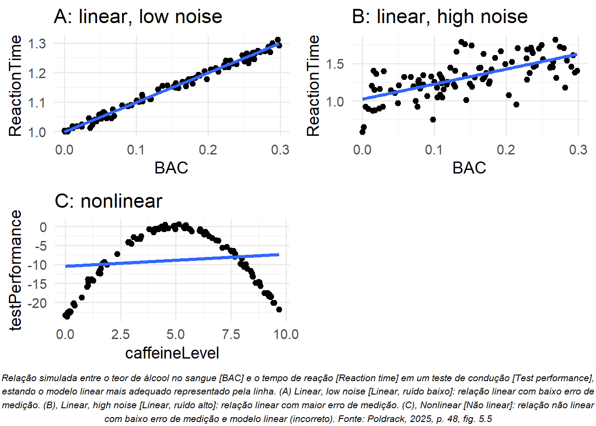
Ambos [A e B] são exemplos em que a relação entre as duas variáveis representadas parece ser linear, e o erro retrata ruído em nossa medição.
Em contrapartida, existem situações [C] em que a relação entre as variáveis não é linear, e o erro aumenta, já que o modelo não está devidamente especificado.
Suponha que estamos interessados na relação entre a ingestão de cafeína e o desempenho em um teste.
A relação entre estimulantes como a cafeína e o desempenho na provageralmente é não linear — ou seja, não segue uma linha reta.
Isso ocorre porque ele aumenta com pequenas quantidades de cafeína (à medida que a pessoa fica mais alerta), mas, depois, começa a diminuir com quantidades maiores (à medida que a pessoa fica nervosa e agitada).
É possível simulardados dessa forma e, em seguida, ajustar um modelo linearaos dados (painel C da Figura 5.5).
A linha reta que melhor se ajusta a esses dados [Método dos Minímos Quadrados - MMQ ; OMS - Ordinary Minimum Square] claramente retrata um alto grau de erro.
Ainda que exista uma relação muito consistente entre o desempenho no teste [Test performance] e a ingestão de cafeína [Caffeine level], ela segue uma curva e não uma linha reta.
O modelo, que assume uma relação linear, apresenta erro elevado porque é o modelo inadequado para esses dados. [Erro percepcional: está no Modelo, mas não está no Mundo real]
4.6 Um Modelo Pode Ser Demasiadamente Bom?
A impressão que temos é do errocomo algo ruim, e, normalmente, preferimos um modelo com menor a outro com maior erro.
No entanto, mencionamos anteriormente o conflito entre a capacidade de um modelo se ajustar com acurácia ao conjunto atual de dados e sua capacidade de generalizar em conjuntos novos de dados.
Em geral, acontece que aquele com o menor erro é bem pior em generalizar em conjuntos novos de dados!
Para visualizar isso, geraremos mais uma vez alguns dados para que possamos saber a verdadeira relação entre as variáveis.
Criaremos dois conjuntos de dados simulados, gerados exatamente da mesma forma: ou seja, a equação para ambos é
\[
y = \beta \times X + \epsilon
\]
a única diferença é que umruído aleatóriodiferente foi usado para\(\epsilon\)[letra grega epsilon que simboliza o erro ou resíduo ou ruído] em cada caso.
Em seguida, ajustamos dois modelos aos dados: um simples (com somente dois parâmetros, inclinação e intercepto) e um mais complexo que contém um total de oito parâmetros (inclinação e intercepto com parâmetros de tamanho que retratam polinômios de grau crescente, como X2, X3, e assim por diante).
Código
```{r}#parameters for simulationset.seed(1122)sampleSize <-16#build a dataframe of simulated datasimData <-tibble(X =rnorm(sampleSize),Y = X +rnorm(sampleSize, sd =1),Ynew = X +rnorm(sampleSize, sd =1) )#fit models to these datasimpleModel <-lm(Y ~ X, data = simData)complexModel <-lm(Y ~poly(X, 8), data = simData)#calculate root mean squared error for "current" datasetrmse_simple <-sqrt(mean(simpleModel$residuals**2))rmse_complex <-sqrt(mean(complexModel$residuals**2))#calculate root mean squared error for "new" datasetrmse_prediction_simple <-sqrt(mean((simpleModel$fitted.values - simData$Ynew)**2))rmse_prediction_complex <-sqrt(mean((complexModel$fitted.values - simData$Ynew)**2))#visualizeplot_original_data <- simData %>%ggplot(aes(X, Y)) +geom_point() +geom_smooth(method ="lm",formula = y ~poly(x, 8),color ="red",se =FALSE ) +geom_smooth(method ="lm",color ="blue",se =FALSE ) +ylim(-3, 3) +annotate("text",x =-1.25,y =2.5,label =sprintf("RMSE=%0.1f", rmse_simple),color ="blue",hjust =0,cex =4 ) +annotate("text",x =-1.25,y =2,label =sprintf("RMSE=%0.1f", rmse_complex),color ="red",hjust =0,cex =4 ) +ggtitle("original data")plot_new_data <- simData %>%ggplot(aes(X, Ynew)) +geom_point() +geom_smooth(aes(X, Y),method ="lm",formula = y ~poly(x, 8),color ="red",se =FALSE ) +geom_smooth(aes(X, Y),method ="lm",color ="blue",se =FALSE ) +ylim(-3, 3) +annotate("text",x =-1.25,y =2.5,label =sprintf("RMSE=%0.1f", rmse_prediction_simple),color ="blue",hjust =0,cex =4 ) +annotate("text",x =-1.25,y =2,label =sprintf("RMSE=%0.1f", rmse_prediction_complex),color ="red",hjust =0,cex =4 ) +ggtitle("new data")# plot_grid(plot_original_data, plot_new_data)# Criando a nota de rodapé como grob com tamanho de fonte personalizadonota_rodape <-textGrob("Um exemplo de sobreajuste. Ambos os conjuntos de dados foram gerados com o mesmo modelo, com diferentes ruídos aleatórios\nadicionados para gerar cada conjunto. O painel A (Original data [Dados originais]) mostra os dados usados para ajustar o modelo, com um\najuste linear simples (linha reta) e um ajuste polinomial complexo de oitavo grau (linha curva). Os valores da raiz do erro quadrático médio\n(RMSE) para cada modelo são mostrados na figura; nesse caso, o complexo tem uma RMSE menor do que o simples. O painel B (New\ndata [Dados novos]) mostra o segundo conjunto de dados, considerando o mesmo modelo sobreposto e os valores RMSE calculados com\no modelo obtido a partir do primeiro conjunto de dados. Aqui, vemos que o mais simples se ajusta melhor ao conjunto novo de dados\ndo que o mais complexo, que foi sobreajustado ao primeiro conjunto de dados. Fonte: Poldrack, 2025, p. 49, fig. 5.6",gp =gpar(fontsize =8,fontface ="italic"),x =0.5,hjust =0.5)# Usando grid.arrange com a nota de rodapé customizada# usando grid.arrange() (do pacote gridExtra), pode usar o argumento bottom:# para gerar um nota de rodapé ´no gráfico finalgrid.arrange( plot_original_data, plot_new_data,ncol =2,bottom = nota_rodape)```
Na Figura 5.6, o painel A mostra que o modelo mais complexo (não linear) se ajusta melhor aos dados do que o mais simples (linear).
No entanto, vemos o contrário quando o mesmo modelo é aplicado a um conjunto novo de dados gerados da mesma forma (painel B).
Aqui, o mais simples se ajusta melhor aos dados novos do que o mais complexo.
Por intuição, podemos observar que o modelo mais complexo é extremamente influenciado pelos pontos de dados específicos do primeiro conjunto de dados; como a posição exata desses pontos de dados foi determinada por ruído aleatório, isso leva o modelo mais complexo a se ajustar indevidamente ao conjunto novo de dados.
Chamamos esse fenômeno de sobreajuste [overfitting].
Por enquanto, é importante não esquecer que o ajuste do nosso modelo precisa ser bom, não demasiadamente bom.
Como disse Albert Einstein (1934): “Dificilmente se pode negar que o objetivo supremo de toda teoria é tornar os elementos básicos irredutíveis tão simples e tão poucos quanto possível sem ter que renunciar à representação adequada de um único dado da experiência”.
Em geral, isso é parafraseado como “tudo deve ser o mais simples possível, mas não demasiadamente simples”.
4.7 Sumarização de Dados Usando a Média
Já falamos sobre a média (ou valor médio) anteriormente, e, de fato, a maioria das pessoas a conhece, mesmo que nunca tenham feito um curso de estatística.
Ela é comumente usada para descrever o que chamamos de tendência central de um conjunto de dados — ou seja, em torno de qual valor os dados estão centralizados?
A maioria das pessoas não pensa em calcular a média como um meio para ajustar um modelo aos dados.
No entanto, é exatamente isso que estamos fazendo quando a calculamos.
Já vimos a fórmula para calcular a média de uma amostra de dados:
\[
\bar{X} = \frac{\sum_{i=1}^{n} x_i}{n}
\]
É importante ressaltar que essa fórmula é específica para uma amostra de dados, um conjunto de pontos de dados selecionados a partir de uma população maior.
Com uma amostra, desejamos caracterizar uma população maior — o conjunto completo de indivíduos em que estamos interessados. [Inferência]
Por exemplo, se fôssemos analistas de pesquisas eleitorais, nossa população de interesse poderia ser todos os eleitores registrados1, ao passo que nossa amostra pode incluir apenas algumas milhares de pessoas dessa população.
No Capítulo 7, falaremos com mais detalhes sobre amostragem, mas, por ora, vale ressaltar que os estatísticos geralmente gostam de usar símbolos distintos a fim de diferenciar os cálculos estatísticos que descrevem valores para uma amostra a partir de parâmetros que descrevem os [verdadeiros e desconhecidos] valores lógicos para uma população; nesse caso, a fórmula para a média da população (denotada como μ) é: [N maiúscula denota o tamanho da população]
\[
\mu = \frac{\sum_{i=1}^{N} x_i}{N}
\]
Em que N é o tamanho de toda a população.
Nesse caso, os cálculos matemáticos são exatamente os mesmos para a amostra e para a população; apenas os símbolos diferem.
Mais tarde, veremos casos em que os cálculos matemáticos são diferentes, dependendo se estamos calculando um parâmetro da população ou uma estatística amostral.
Já vimos que a média é o estimador que garante um erro médio de 0. [MSE]
No entanto, também aprendemos que o erro médio não é o melhor critério; queremos, na verdade, um estimador que nos forneça a menor soma dos erros quadráticos (SSE), o que a média também faz.
Isso poderia ser provado usando cálculo, mas demonstraremos graficamente na Figura 5.7.
Código
```{r}df_error <-tibble(val =seq(100, 175, 0.05),sse =NA )for (i in1:dim(df_error)[1]) { err <- NHANES_child$Height - df_error$val[i] df_error$sse[i] <-sum(err**2)}df_error %>%ggplot(aes(val, sse)) +geom_vline(xintercept =mean(NHANES_child$Height), color ="blue") +geom_point(size =0.1) +annotate("text",x =mean(NHANES_child$Height) +8,y =max(df_error$sse),label ="mean",color ="blue" ) +labs(title ="Gráfico com parábola (SSE): média [reta vertical]",subtitle ="SSE: Sum of Squared Error (Soma dos Erros Quadráticos - SEQ)",caption ="Uma demonstração de como a média é a medida estatística que minimiza a soma dos erros quadráticos\n[Sum of squared errors]. Usando os dados de altura infantil do NHANES, calculamos a média (denotada\npela linha vertical, Mean [Média]). Em seguida, testamos um intervalo de possíveis estimativas de\nparâmetros e, para cada um, calculamos a soma dos erros quadráticos para cada ponto de dados desse\nvalor, que são indicados pela curva. Observamos que a média se situa no ponto mínimo\ndo gráfico de erro quadrático. Fonte: Poldrack, 2025, p. 51, fig. 5.7",x ="Test value",y ="Sum of Squared Error [SSE]" )```
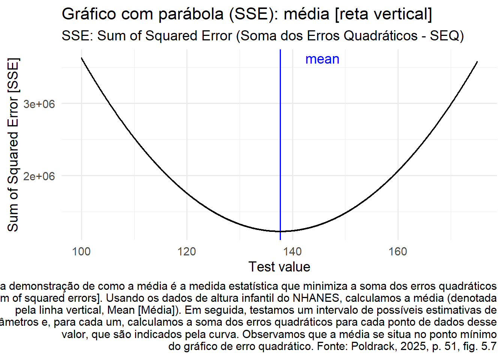
Como a minimização da SSE é uma boa feature [característica desejada], a média é a medida estatística mais utilizada para sumarizar os dados.
No entanto, ela também tem um lado sombrio.
Suponha que cinco pessoas estejam em um bar e que examinaremos a renda de cada uma delas (Tabela 5.1).
A média (US$61.600,00) parece ser uma boa sumarização da renda das cinco.
Agora, analisaremos o que acontece se Beyoncé Knowles entrar no bar (Tabela 5.2).
A média agora é de quase US$10 milhões, o que não é representativo de nenhuma das pessoas do bar — em particular, é extremamente influenciada pelo outlier de Beyoncé, que foge, e muito, da média.
De modo geral, essa medida estatística é altamente sensível a valores extremos, por isso é sempre importante garantir que não haja valores extremos ao usá-la para sumarizar os dados.
Renda de cinco clientes do bar sem e com renda da Beyoncé
4.8 Sumarização Robusta de Dados Usando a Mediana
Se quisermos sumarizar os dados de uma forma menos sensível a outliers, podemos usar outra medida estatística chamada mediana.
Se ordenarmos todos os valores por ordem de magnitude, a mediana é o valor que fica no meio.
Caso exista um número par de valores, existirão dois valores coincidentes para a posição do meio.
Nesse caso, usamos a média (ou seja, o ponto intermediário) desses dois números.
Vejamos um exemplo. Suponha que queremos sumarizar os seguintes valores:
8 6 3 14 12 7 6 4 9
Se os ordenarmos assim:
3 4 6 6 7 8 9 12 14
A mediana é o valor do meio — neste caso, o quinto dos nove valores.
Considerando que a média minimiza a soma dos erros quadráticos, a mediana minimiza uma quantidade ligeiramente diferente: a soma do valor absoluto dos erros.
Isso explica por que é menos sensível a outliers — elevar ao quadrado potencializa o efeito de grandes erros em comparação ao uso do valor absoluto.
É possível observar isso no exemplo da renda: a renda mediana (US$65.000) é mais representativa do grupo como um todo do que a média (US$9.051.333) e menos sensível a um único outlier maior.
Sendo assim, por que usaríamos a média?
Conforme analisaremos em um próximo capítulo, ela é o “melhor” estimador no sentido de que varia menos de amostra para amostra, em comparação a outros estimadores.
Cabe a nós decidir se a sensibilidade a potenciais outliers vale a pena — afinal de contas, a estatística tem tudo a ver com trade-offs. [trocas que caracterizam dilemas de escolha: melhorar um atributo piora outro e vice-vsera]
4.9 A Moda
Não raro, queremos descrever a tendência central de um conjunto de dados que não é numérico.
Por exemplo, imagine que queremos saber quais modelos de iPhone são mais usados.
Para testar isso, poderíamos perguntar a um grande grupo de usuários desse celular qual modelo cada um tem.
Se calculássemos a média desses valores, poderíamos observar que a média do modelo de iPhone é 9,51, o que claramente não faz sentido, pois esses números não podem ser interpretados como medidas quantitativas.
Neste caso, uma medida de tendência central mais adequada é a moda, o valor mais comum no conjunto de dados, conforme vimos anteriormente.
4.10 Variabilidade: Até que Ponto a Média se Ajusta Bem aos Dados?
Após descrevermos a tendência central dos dados, em geral, também queremos descrever até que ponto eles podem variar.
Às vezes, também chamamos essa descrição de dispersão pelo fato de descrever o quanto os dados estão amplamente dispersos.
Já exploramos a soma dos erros quadráticos, a base para as medidas de variabilidade mais utilizadas: a variância e o desvio-padrão.
A variância para uma população (referenciada como σ2) é simplesmente a soma dos erros quadráticos[SSE] dividida pelo número de observações — ou seja, é exatamente o mesmo que o erro quadrático médio que já vimos:
O desvio-padrão da população é simplesmente a raiz quadrada disso — ou seja, a raiz do erro quadrático [RMSE] que já vimos.
Ele é útil porque apresenta os erros nas mesmas unidades que os dados originais (desfazendo a quadratura que aplicamos aos erros).
Como normalmente não temos acesso a toda a população, temos que calcular a variância usando uma amostra, que chamamos de \(\hat{\sigma}^2\), com o “chapéu” representando o fato de se tratar de uma estimativa baseada em uma amostra.
A equação para \(\hat{\sigma}^2\) (às vezes, também chamada de s2) é semelhante à de σ2: [variância amostral]
A única diferença entre as duas equações é que dividimos por n − 1 a mesma variância em vez de dividir por N a variância da população.
Isso se relaciona com um conceito fundamental de estatística: graus de liberdade.
Lembre que, para calcular a variância amostral, primeiro precisamos estimar a média amostral\(\bar{X}\).
Ao fazer isso, um valor nos dados não pode mais variar.
Por exemplo, digamos que temos os seguintes pontos de dados para a variável x: [3, 5, 7, 9, 11], cuja média é 7.
Como já sabemos que média deste conjunto de dados é 7, podemos calcular o valor específico de qualquer dado ausente.
Por exemplo, suponha que ocultamos o primeiro valor (3).
Mesmo sem vê-lo, sabemos que seu valor deve ser 3, pois a média de 7 implica que a soma de todos os valores é
7 * n = 35 e 35 − (5 + 7 + 9 + 11) = 3.
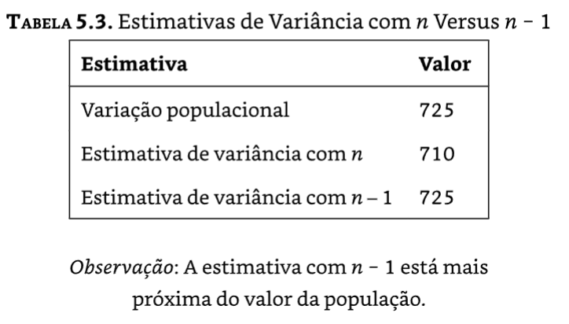
Estimativas de Variância com n versus n-1
Assim sendo, quando dizemos que “perdemos” um grau de liberdade, significa que há um valor que não é livre para variar após ajustarmos o modelo.
No contexto da variância amostral, se desconsiderarmos o grau de liberdade perdido, nossa estimativa da variância amostral será enviesada, fazendo com que subestimemos a incerteza de nossa estimativa da média.
4.11 Usando Simulações para Entender Estatística
Sou defensor ferrenho do uso de simulações computacionais para entender conceitos estatísticos.
Nos capítulos posteriores, nós o exploraremos de forma mais aprofundada.
Aqui, apresentamos a ideia questionando se podemos confirmar a necessidade de subtrair 1 [do tamanho n] da amostra ao calcular a variância amostral.
Consideraremos toda a amostra de crianças do conjunto de dados do NHANES como nossa “população”.
Queremos avaliar a eficiência dos cálculos de variância amostral, usando n ou n − 1 no denominadorpara estimar a variância dessa população, considerando um grande número de amostras aleatóriassimuladas a partir dos dados.
No Capítulo 8, abordaremos os detalhes de como fazer isso.
Na Tabela 5.3 [acima], os resultados mostram que a teoria descrita anteriormente estava correta: a estimativa da variância usando n − 1 como denominador é bem próxima da variância calculada em todos os dados (ou seja, a população), enquanto aquela calculada usando n como denominador é enviesada (menor) em comparação ao [verdadeiro e, neste caso, conhecido] valor lógico [do parâmetro populacional].
Como analisaremos mais tarde, subestimar a variância é bastante complicado porque nos torna excessivamente confiantes em relação às nossas decisões estatísticas. [os Testes de Significância da Hipótese Nula; NHST - Null Hypotesis Signifcant Test]
4.12 Z-Scores
Após caracterizar uma distribuição em termos de tendência central e de variabilidade, geralmente é útil expressar os escores individuais em termos de sua posição relativa à distribuição geral.
Suponha que estamos interessados em caracterizar o nível relativo de crimes em diferentes estados, a fim de determinar se a Califórnia é um lugar especialmente perigoso.
Podemos responder a essa pergunta com os dados de 2014 do site Uniform Crime Reporting do FBI.
O painel A da Figura 5.8 mostra um histograma do número de crimes violentos por estado, destacando o valor da Califórnia.
Observando esses dados, parece que a Califórnia é absurdamente perigosa, com 153.709 crimes em 2014.
Podemos visualizar esses dados gerando um mapa, que mostra a distribuição de uma variável entre os estados, apresentado no painel B da Figura 5.8 [abaixo].
Código
```{r}crimeData <-read.table("https://raw.githubusercontent.com/statsthinking21/statsthinking21-figures-data/main/CrimeOneYearofData_clean.csv",header =TRUE,sep ="," )# let's drop DC since it is so smallcrimeData <- crimeData %>% dplyr::filter(State !="District of Columbia")caCrimeData <- crimeData %>% dplyr::filter(State =="California")p1 <- crimeData %>%ggplot(aes(Violent.crime.total)) +geom_histogram(bins =25) +geom_vline(xintercept = caCrimeData$Violent.crime.total, color ="blue") +xlab("Number of violent crimes in 2014")library(mapproj)library(fiftystater)# É necessário instalar antes o pacote devtools# retirar o hashtag do início da próxima linha e executar ela só 1 vez# install.packages("devtools")# Para depois instalar o pacote fiftystater# Baixando-o do Git Hub:# retirar o hashtag do início da próxima linha e executar ela só 1 vez# devtools::install_github("wmurphyrd/fiftystater")data("fifty_states") # this line is optional due to lazy data loadingcrimeData <- crimeData %>%mutate(StateLower =tolower(State),Violent.crime.thousands = Violent.crime.total/1000)# map_id creates the aesthetic mapping to the state name column in your dataplot_map <-ggplot(crimeData, aes(map_id = StateLower)) +# map points to the fifty_states shape datageom_map(aes(fill = Violent.crime.thousands), map = fifty_states) +scale_x_continuous(breaks =NULL) +scale_y_continuous(breaks =NULL) +theme(legend.title =element_text(size =10, # tamanho da fonteface ="bold", # negritocolor ="blue", # cor do textohjust =0# alinhamento horizontal (0 = esquerda, 0.5 = centro, 1 = direita) ),legend.position ="bottom",panel.background =element_blank() ) +coord_map() +expand_limits(x = fifty_states$long, y = fifty_states$lat) +labs(x ="",y ="" ) +# inverter o gradiente de cores para estados com mais crimes violentos# serem representados pela cor azul mais escura.# O oposto pela cor azul mais claro.scale_fill_gradient(low ="lightblue", # cor para valores baixoshigh ="darkblue"# cor para valores altos )# add border boxes to AK/HIp2 <- plot_map +fifty_states_inset_boxes()# plot_grid(p1, p2)# Criando a nota de rodapé como grob com tamanho de fonte personalizadonota_rodape <-textGrob("(A) Histograma do número de crimes violentos em 2014 [Number of violent crimes in 2014]. O valor para a Califórnia aparece como\numa linha vertical ao lado direito do gráfico. (B) Um mapa dos mesmos dados, com o número de crimes (em milhares) plotados por estado.\nFonte: Poldrack, 2025, p. 55, fig. 5.8 (apenas com a inversão do gradiente de cores do original)",gp =gpar(fontsize =8,fontface ="italic"),x =0.5,hjust =0.5)# Usando grid.arrange com a nota de rodapé customizada# usando grid.arrange() (do pacote gridExtra), pode usar o argumento bottom:# para gerar um nota de rodapé ´no gráfico finalgrid.arrange( p1, p2,ncol =2,bottom = nota_rodape)```
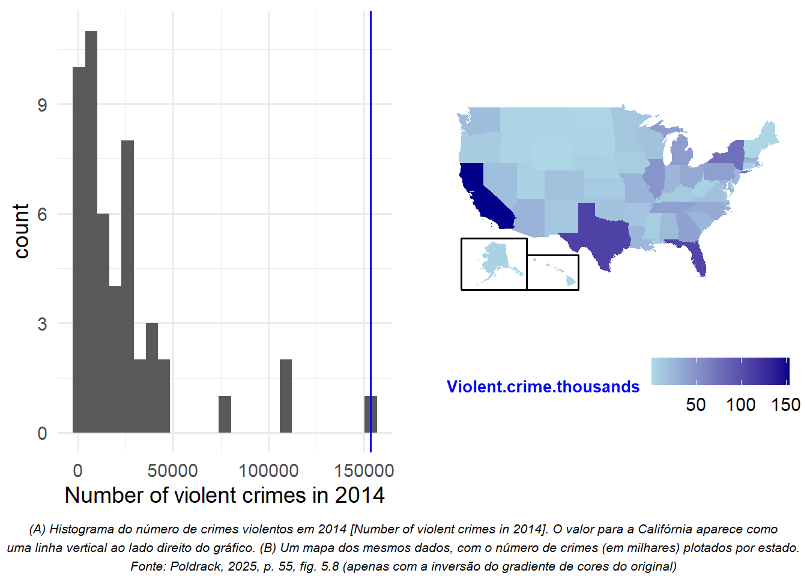
No entanto, pode ter lhe ocorrido que a Califórnia também tem a maior população entre os estados dos EUA.
Logo, é plausível que também tenha um número maior de crimes.
Se plotarmos o número de crimes em relação à população de cada estado (painel A da figura 5.9 [abaixo]), veremos uma relação direta entre as duas variáveis.
Código
```{r}p1 <- crimeData %>%ggplot(aes(Population, Violent.crime.total)) +geom_point() +annotate("point",x = caCrimeData$Population,y = caCrimeData$Violent.crime.total,color ="blue" ) +annotate("text",x = caCrimeData$Population -1000000,y = caCrimeData$Violent.crime.total +8000,label ="CA",color ="blue" ) +ylab("Number of violent crimes in 2014")p2 <- crimeData %>%ggplot(aes(Violent.Crime.rate)) +geom_histogram(binwidth =80) +geom_vline(xintercept = caCrimeData$Violent.Crime.rate, color ="blue") +annotate("text",x = caCrimeData$Violent.Crime.rate+25,y =12,label ="CA",color ="blue" ) +scale_x_continuous(breaks =seq.int(0, 700, 100)) +scale_y_continuous(breaks =seq.int(0, 13, 2)) +xlab("Rate of violent crimes per 100,000 people") +labs(x ="Rate of violent crimes per 100,000 people") +# label do eixo xtheme(axis.title.x =element_text(size =12) # tamanho da fonte do título do eixo x )# plot_grid(p1, p2)# Criando a nota de rodapé como grob com tamanho de fonte personalizadonota_rodape <-textGrob("(A) Um gráfico com o número de crimes violentos em 2014 [Z-scored rate of violent crimes] e a população [Population] por estado.\n(B) Um histograma das taxas de crimes violentos per capita, expressos como crimes a cada 100.000 habitantes [Rate of violent crimes\nper 100,000 people]. Fonte: Poldrack, 2025, p. 56, fig. 5.9 (apenas com ajuste do tamanho da fonte do eixo x original)",gp =gpar(fontsize =8,fontface ="italic"),x =0.5,hjust =0.5 )# Usando grid.arrange com a nota de rodapé customizada# usando grid.arrange() (do pacote gridExtra), pode usar o argumento bottom:# para gerar um nota de rodapé ´no gráfico finalgrid.arrange( p1, p2,ncol =2,bottom = nota_rodape)```
Em vez de usar o número bruto de crimes, devemos usar a taxa de crimes violentos per capita, obtida dividindo o número de crimes por estado pela população de cada um.
O conjunto de dados do FBI já inclui esse valor (expresso como taxa a cada 100.000 habitantes).
Observando o painel B da Figura 5.9 [acima], percebemos que a Califórnianão é tão perigosa assim.
A taxa de criminalidade de 396,10 por 100.000 pessoas está um pouco acima da média de 346,81 entre os estados, mas dentro do intervalo de muitos outros.
Mas e se quisermos ter uma visão mais clara da distância da Califórnia em relação ao restante da distribuição?
O Z-score nos possibilita expressar os dados, de modo que forneça mais insights sobre a relação de cada ponto de dados com a distribuição geral.
A fórmula que calcula um Z-score para um ponto individual de dados, considerando a média da população (μ) e o desvio-padrão (σ) conhecidos, é:
\[
Z(x) = \frac{x - \mu}{\sigma}
\]
Intuitivamente, podemos considerar o Z-score como um indicador da distância de qualquer ponto de dados em relação à média, mensuradaem unidades de desvio-padrão.
Podemos calcular esse escore para os dados da taxa de criminalidade, conforme mostrado na Figura 5.10, que plota os Z-scores em relação aos escores originais.
A seguir, o gráfico de dispersão mostra que o processo de Z-score não altera a distribuição relativa dos pontos de dados (visível porque os dados originais e os com Z-score ficam em uma linha reta quando plotados comparativamente em um gráfico) — apenas os desloca para ter uma média de 0 e um desvio padrão de 1.
A Figura 5.11 demonstra os dados de crimes com Z-score usando uma representação geográfica.
Ela nos proporciona uma perspectiva um pouco mais interpretável dos dados.
Por exemplo, podemos observar que Nevada, Tennessee e Novo México apresentam taxas de criminalidade que estão aproximadamente dois desvios-padrão acima da média.
Código
```{r}# calcuar o Z-ScorecrimeData <- crimeData %>%mutate(ViolentCrimeRateZscore = (Violent.Crime.rate -mean(Violent.Crime.rate)) /sd(crimeData$Violent.Crime.rate) )caCrimeData <- crimeData %>% dplyr::filter(State =="California")media_x <-mean(crimeData$Violent.Crime.rate)crimeData %>%ggplot(aes(Violent.Crime.rate, ViolentCrimeRateZscore)) +geom_point() +annotate("point",x = caCrimeData$Violent.Crime.rate,y = caCrimeData$ViolentCrimeRateZscore,color ="blue",size =3,alpha =0.5 ) +annotate("text",x = caCrimeData$Violent.Crime.rate -5,y = caCrimeData$ViolentCrimeRateZscore +0.30,label ="CA",color ="blue" ) +labs(x ="Rate of violent crimes per 100,000 people",y ="Z-scored of rate of violent crimes",caption ="Gráfico de dispersão dos dados originais da taxa de criminalidade em relação aos dados com Z-score.\nFonte: Poldrack, 2025, p. 57, fig. 5.10 (acrescida a taxa média e a California - CA como ponto azul claro)" ) +geom_vline(xintercept = media_x,color ="blue",linetype ="dashed",linewidth =1 ) +annotate("text",x = media_x +70, # ajuste conforme necessário para a posição horizontaly =2, # ajuste conforme necessário para a posição verticallabel =paste0("Média = ", round(media_x, 1)),color ="blue",vjust =-0.5,fontface ="bold" )```
Agora os dados de crime renderizados em um mapa dos EUA, apresentados como Z-scores.
Código
```{r}plot_map_z <-ggplot(crimeData, aes(map_id = StateLower)) +# map points to the fifty_states shape datageom_map(aes(fill = ViolentCrimeRateZscore), map = fifty_states) +expand_limits(x = fifty_states$long, y = fifty_states$lat) +scale_x_continuous(breaks =NULL) +scale_y_continuous(breaks =NULL) +theme(legend.position ="top",panel.background =element_blank() ) +coord_map() +expand_limits(x = fifty_states$long, y = fifty_states$lat) +labs(x ="",y ="") +# inverter o gradiente de cores para estados com mais crimes violentos# serem representados pela cor azul mais escura.# O oposto pela cor azul mais claro.scale_fill_gradient(low ="lightblue", # cor para valores baixoshigh ="darkblue"# cor para valores altos )final_plot <-ggdraw(plot_map_z) +draw_label("Dados de crime renderizados em um mapa dos EUA, apresentados como Z-scores.\nFonte: Poldrack, 2025, p. 57, fig. 5.11 (apenas com a inversão do gradiente de cores do original)",x =0.5, y =0.02, hjust =0.5, vjust =0,fontface ="italic", size =10 )# print(final_plot)# add border boxes to AK/HIfinal_plot +fifty_states_inset_boxes()```
4.13 Interpretando Z-scores
O “Z” em Z-score se origina do fato de a distribuição normal padrão (ou seja, uma distribuição normal com uma média de 0 e um desvio-padrão de 1) frequentemente ser chamada de distribuição Z.
Podemos usar a distribuição normal padrão para nos ajudar a compreender o que os Z-scores específicos nos revelam sobre a posição de um ponto de dados em relação ao restante da distribuição.
Na Figura 5.12, a coluna da esquerda mostra que esperamos que cerca de 16% dos valores estejam em Z ≥ 1 e a mesma proporção, em Z ≤ −1.
Na Figura 5.12, a coluna da direita apresenta o mesmo gráfico, mas para dois desvios-padrão.
Código
```{r}# First, create a function to generate plots of the density and CDFdnormfun <-function(x) {return(dnorm(x, 248))}plot_density_and_cdf <-function(zcut, zmin =-4, zmax =4, plot_cdf =TRUE, zmean =0, zsd =1) { zmin <- zmin * zsd + zmean zmax <- zmax * zsd + zmean x <-seq(zmin, zmax, 0.1* zsd) zdist <-dnorm(x, mean = zmean, sd = zsd) area <-pnorm(zcut) -pnorm(-zcut) p2 <-tibble(zdist = zdist,x = x ) %>%ggplot(aes(x, zdist)) +geom_line(aes(x, zdist),color ="red",size =2 ) +stat_function(fun = dnorm, args =list(mean = zmean, sd = zsd),xlim =c(zmean - zcut * zsd, zmean + zsd * zcut),geom ="area", fill ="orange" ) +stat_function(fun = dnorm, args =list(mean = zmean, sd = zsd),xlim =c(zmin, zmean - zcut * zsd),geom ="area", fill ="green" ) +stat_function(fun = dnorm, args =list(mean = zmean, sd = zsd),xlim =c(zmean + zcut * zsd, zmax),geom ="area", fill ="green" ) +annotate("text",x = zmean,y =dnorm(zmean, mean = zmean, sd = zsd) /2,size =5,label =sprintf("%0.1f%%", area *100) ) +annotate("text",x = zmean - zsd * zcut -0.5* zsd,y =dnorm(zmean - zcut * zsd, mean = zmean, sd = zsd) +0.01/ zsd,size =3,label =sprintf("%0.1f%%", pnorm(zmean - zsd * zcut, mean = zmean, sd = zsd) *100) ) +annotate("text",x = zmean + zsd * zcut +0.5* zsd,y =dnorm(zmean - zcut * zsd, mean = zmean, sd = zsd) +0.01/ zsd,size =3,label =sprintf("%0.1f%%", (1-pnorm(zmean + zsd * zcut, mean = zmean, sd = zsd)) *100) ) +xlim(zmin, zmax) +labs(x ="Z score",y ="density" ) cdf2 <-tibble(zdist = zdist,x = x,zcdf =pnorm(x, mean = zmean, sd = zsd) ) %>%ggplot(aes(x, zcdf)) +geom_line() +annotate("segment",x = zmin,xend = zmean + zsd * zcut,y =pnorm(zmean + zsd * zcut, mean = zmean, sd = zsd),yend =pnorm(zmean + zsd * zcut, mean = zmean, sd = zsd),color ="red",linetype ="dashed" ) +annotate("segment",x = zmean + zsd * zcut,xend = zmean + zsd * zcut,y =0, yend =pnorm(zmean + zsd * zcut, mean = zmean, sd = zsd),color ="red",linetype ="dashed" ) +annotate("segment",x = zmin,xend = zmean - zcut * zsd,y =pnorm(zmean - zcut * zsd, mean = zmean, sd = zsd),yend =pnorm(zmean - zcut * zsd, mean = zmean, sd = zsd),color ="blue",linetype ="dashed" ) +annotate("segment",x = zmean - zcut * zsd,xend = zmean - zcut * zsd,y =0,yend =pnorm(zmean - zcut * zsd, mean = zmean, sd = zsd),color ="blue",linetype ="dashed" ) +ylab("Cumulative density")return(list(pdf = p2, cdf = cdf2)) }plots1 =plot_density_and_cdf(1)plots2 =plot_density_and_cdf(2)# plot_grid(plots1$pdf, plots2$pdf, plots1$cdf, plots2$cdf, nrow=2, ncol=2)# Criando a nota de rodapé como grob com tamanho de fonte personalizadonota_rodape <-textGrob("Na parte superior temos a densidade [Density] e, na parte inferior, a distribuição cumulativa [Cumulative density]\nde uma distribuição normal padrão, com pontos de cutoffs em um desvio-padrão acima/abaixo da média (coluna da esquerda) e\ndois desvios-padrão (coluna da direita). Fonte: Poldrack, 2025, p. 58, fig. 5.12 (apenas com ajuste do tamanho da fonte das proporções %)",gp =gpar(fontsize =8,fontface ="italic"),x =0.5,hjust =0.5 )# Usando grid.arrange com a nota de rodapé customizada# usando grid.arrange() (do pacote gridExtra), pode usar o argumento bottom:# para gerar um nota de rodapé ´no gráfico finalgrid.arrange( plots1$pdf, plots2$pdf, plots1$cdf, plots2$cdf,nrow =2,ncol =2,bottom = nota_rodape)```
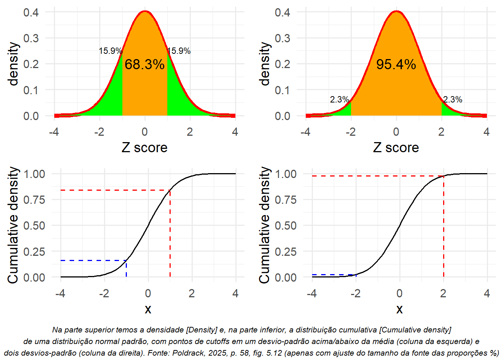
Aqui, vemos que apenas 2,3% dos valores estão em Z ≤ −2 e o mesmo em Z ≥ 2.
Portanto, se soubermos o Z-score de um determinado ponto de dados, podemos estimar a probabilidade ou a improbabilidade de encontrarmos um valor tão extremo quanto esse.
Isso nos possibilita contextualizar melhor os valores.
No caso das taxas de criminalidade, observamos que a Califórnia tem um Z-score de 0.38 em relação à sua taxa de crimes violentos per capita, indicando que está próxima da média de outros estados, pois cerca de 35% desses apresentam taxas maiores e cerca de 65% deles apresentam taxas menores.
4.14 Escores Padronizados
Um escore padronizado é um Z-score que foi transformado para ter média e desvio-padrão diferentes da distribuição normal padrão.
Suponha que, em vez de Z-scores, quiséssemos gerar escores padronizados de criminalidade com média de 100 e desvio-padrão de 10 (Figura 5.13).
Isso se assemelha à padronização em notas de testes de inteligência para gerar o quociente de inteligência (QI).
Podemos fazer isso simplesmente multiplicando os Z-scores por 10 e, em seguida, somando 100.
Código
```{r}crimeData <- crimeData %>%mutate(ViolentCrimeRateStdScore = (ViolentCrimeRateZscore) *10+100 )caCrimeData <- crimeData %>%filter(State =="California")crimeData %>%ggplot(aes(ViolentCrimeRateStdScore)) +geom_histogram(binwidth =5,alpha =0.6,fill ="gray", # cor de preenchimento das barrascolor ="black"# cor das linhas das bordas das barras ) +geom_vline(xintercept = caCrimeData$ViolentCrimeRateStdScore,color ="darkblue",linetype ="dashed",size =1 ) +scale_y_continuous(breaks =seq.int(0, 13, 2)) +annotate("text",x = caCrimeData$ViolentCrimeRateStdScore +6,y =12,label =paste0("California = ", round(caCrimeData$ViolentCrimeRateStdScore, 1)),color ="darkblue" ) +labs(x ="Standardized rate of violent crimes",caption ="Dados de crimes apresentados como escores padronizados [Standardized rate of violent crimes]\ncom média de 100 e desvio-padrão de 10 (acrescido o da California - CA junto à linha vertical azul clara).\nFonte: Poldrack, 2025, p. 59, fig. 5.13" )```
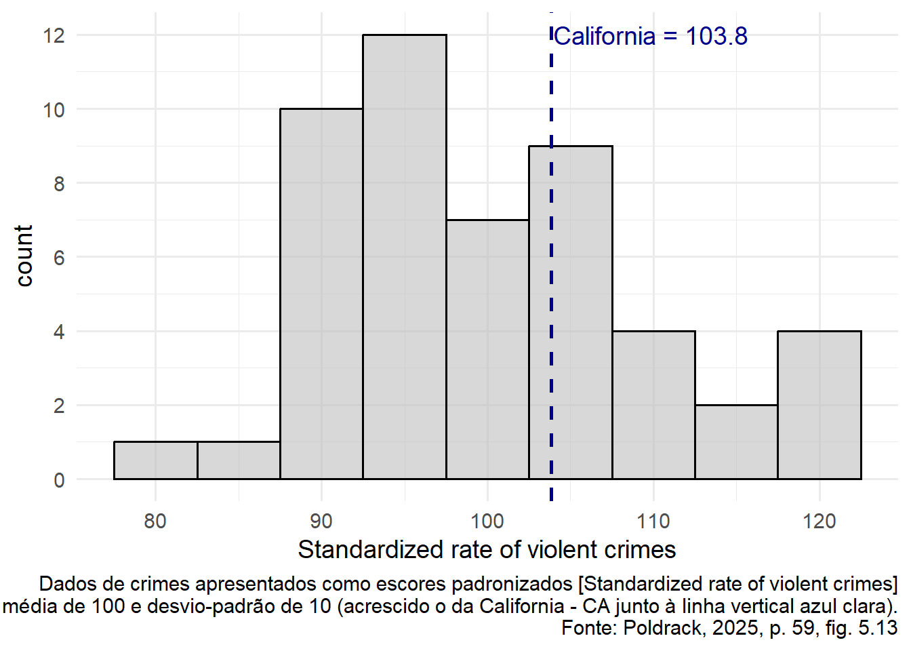
4.15 Usando Z-scores para Comparar Distribuições
Uma aplicação vantajosa dos Z-scores é comparar distribuições de diferentes variáveis.
Suponha que queiramos comparar a distribuição de crimes violentos e de crimes contra o patrimônio entre os estados.
No painel A da Figura 5.15, representamos comparativamente ambas, sendo que a Califórnia é mostrada na forma de um ponto enorme.
Como podemos observar, as taxas brutas de crimes contra o patrimônio são bem maiores do que as taxas brutas de crimes violentos.
Assim, não podemos comparar os números diretamente.
No entanto, podemos plotar os Z-scores desses dados entre si (painel B da Figura 5.14) — aqui, mais uma vez, observamos que a distribuição dos dados não muda.
Código
```{r}p1 <- crimeData %>%ggplot(aes(Violent.Crime.rate, Property.crime.rate)) +geom_point(size =2) +annotate("point",x = caCrimeData$Violent.Crime.rate,y = caCrimeData$Property.crime.rate,color ="blue",size =5 ) +annotate("text",x = caCrimeData$Violent.Crime.rate +100,y = caCrimeData$Property.crime.rate -50,label ="California",color ="blue",size =5 ) +labs(x ="Violent crime rate (per 100,000)",y ="Property crime rate (per 100,000)" )# plot z scorescrimeData <- crimeData %>%mutate(PropertyCrimeRateZscore = (Property.crime.rate -mean(Property.crime.rate)) /sd(Property.crime.rate) )caCrimeData <- crimeData %>% dplyr::filter(State =="California")p2 <- crimeData %>%ggplot(aes(ViolentCrimeRateZscore, PropertyCrimeRateZscore)) +geom_point(size =2) +scale_y_continuous(breaks =seq.int(-2, 2, .5)) +scale_x_continuous(breaks =seq.int(-2, 2, .5)) +annotate("point",x = caCrimeData$ViolentCrimeRateZscore,y = caCrimeData$PropertyCrimeRateZscore,color ="blue", size =5 ) +annotate("text",x = caCrimeData$ViolentCrimeRateZscore +0.8,y = caCrimeData$PropertyCrimeRateZscore -0.2,label ="California",color ="blue",size =5 ) +theme(axis.title =element_text(size =16) ) +labs(x ="z-scored rate of violent crimes",y ="z-scored rate of property crimes" )# plot_grid(p1, p2)# Criando a nota de rodapé como grob com tamanho de fonte personalizadonota_rodape <-textGrob("(A) Gráfico de taxas de crimes contra o patrimônio [Z-scored rate of property crimes] e\n(B) taxas de crimes contra o patrimônio e violentos [Z-scored rate of violent crimes] com Z-score.\nFonte: Poldrack, 2025, p. 60, fig. 5.14",gp =gpar(fontsize =8,fontface ="italic"),x =0.5,hjust =0.5 )# Usando grid.arrange com a nota de rodapé customizada# usando grid.arrange() (do pacote gridExtra), pode usar o argumento bottom:# para gerar um nota de rodapé ´no gráfico finalgrid.arrange( p1, p2,ncol =2,bottom = nota_rodape)```
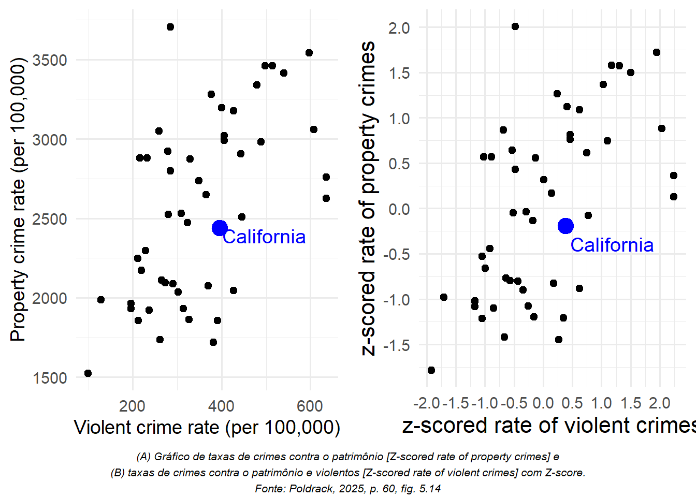
Convertê-los em Z-scores para cada variável faz com que sejam comparáveis e nos possibilita avaliar que a Califórnia está no meio da distribuição em termos de crimes violentos e de crimes contra o patrimônio.
Adicionaremos mais um fator ao gráfico: a população.
Código
```{r}p1 <- crimeData %>%ggplot(aes(ViolentCrimeRateZscore, PropertyCrimeRateZscore)) +geom_point(aes(size = Population)) +annotate("point",x = caCrimeData$ViolentCrimeRateZscore,y = caCrimeData$PropertyCrimeRateZscore,color ="blue",size =5 ) +labs(x ="z-scored rate of violent crimes",y ="z-scored rate of property crimes" ) +theme(legend.position =c(0.2,0.8))crimeData <- crimeData %>%mutate(ViolenceDiff = ViolentCrimeRateZscore - PropertyCrimeRateZscore )p2 <- crimeData %>%ggplot(aes(Population, ViolenceDiff)) +geom_point() +ylab("Violence difference")# plot_grid(p1, p2)# Criando a nota de rodapé como grob com tamanho de fonte personalizadonota_rodape <-textGrob("(A) Gráfico de taxas de crimes violentos [Z-scored rate of violent crimes] comparadas a taxas de crimes contra o patrimônio\n[Z-scored rate of property crimes], com o tamanho da população retratado pelo tamanho do símbolo gráfico.\n(B) Escores de diferença [Violence difference] para crimes violentos e crimes contra o patrimônio, plotados em relação à população [Population].\nFonte: Poldrack, 2025, p. 60, fig. 5.15",gp =gpar(fontsize =8,fontface ="italic"),x =0.5,hjust =0.5 )# Usando grid.arrange com a nota de rodapé customizada# usando grid.arrange() (do pacote gridExtra), pode usar o argumento bottom:# para gerar um nota de rodapé ´no gráfico finalgrid.arrange( p1, p2,ncol =2,bottom = nota_rodape)```
No painel A da Figura 5.15, demonstramos isso com o tamanho do símbolo gráfico, que geralmente é uma forma útil de adicionar informações a um gráfico.
Como os Z-scores são diretamente comparáveis, também podemos calcular um escore de diferença que expresse a taxa relativa de crimes violentos e crimes não violentos (contra o patrimônio) entre os estados.
Em seguida, podemos plotar esses escores em relação à população (painel B da Figura 5.15).
Isso mostra como podemos usar Z-scores a fim de relacionar diferentes variáveis em uma escala comum.
Vale ressaltar que os estados menores parecem ter as maiores diferenças em ambas as direções.
Mesmo que seja tentador observar cada estado e tentar determinar por que eles têm um escore de diferença alto ou baixo, isso provavelmente retrata o fato de que as estimativas obtidas a partir de amostras menores serão necessariamente mais variáveis, conforme analisaremos no Capítulo 7.
4.16 Problemas
Descreva as três partes do modelo básico de estatística e como elas se relacionam.
Um pesquisador quer criar um modelo para predizer a altura, usando uma amostra com 8 pessoas com as seguintes alturas (em centímetros): 170; 176; 168; 188; 178; 168; 179; 181.
▶Determine a moda desses dados.
▶Calcule o erro da moda para cada pessoa e depois calcule a média desses erros.
▶Calcule a média dos dados e, em seguida, calcule o erro médio a partir da média.
Descreva as duas possíveis fontes de erro ao comparar as predições de um modelo com os dados.
Descreva o conceito de sobreajuste e como saber se o sobreajuste ocorreu.
Se estimarmos a média e a mediana de um conjunto de dados e, em seguida, calcularmos a soma dos erros quadráticos para cada uma dessas estimativas em comparação aos dados, qual das duas é necessariamente menor ou igual à outra?
Qual é a razão pela qual alguém pode querer usar a mediana em vez da média para descrever um conjunto específico de dados?
Calcule a mediana dos dados descritos na questão 2.
O que significa quando um símbolo estatístico tem um “chapéu” (como )?
Qual é a diferença entre a forma como o desvio-padrão é calculado para uma população e para uma amostra, e qual é o conceito fundamental de estatística relacionado a essa diferença?
Calcule o desvio-padrão para os dados da amostra descritos na questão 2.
Calcule os Z-scores para cada uma das pessoas descritas na questão 2.
Qual das afirmações a seguir é verdadeira em relação à média? Escolha todas as opções que se aplicam.
▶A soma dos erros de cada amostra com a média (amostral) é 0.
▶Ela minimiza a soma dos erros quadráticos.
▶Ela não é sensível a outliers.
▶Ela retrata o quinquagésimo percentil nos dados.
O modelo que melhor se ajusta a um determinado conjunto de dados (ou seja, aquele com a menor soma de erros quadráticos) geralmente também é o modelo que melhor se ajusta a um conjunto novo de dados. Verdadeiro ou falso?
Qual desses conceitos é mais diretamente relevante para a pergunta anterior?
▶Sobreajuste
▶Graus de liberdade
▶Variabilidade
▶Escores padronizados
4.17 Coeficiente de Correlação - cap. 10 pldr
O coeficiente de correlação (r) é uma medida da força da relação linearentre duas variáveis contínuas.
No Capítulo 13, analisaremos a correlação mais detalhadamente; por ora, simplesmente apresentaremosr como uma forma de quantificar a relação entre duas variáveis.
Trata-se de umamedida que varia de − 1 a 1, em que um valor de 1 representa uma relação positiva perfeitaentre as variáveis, 0 representa nenhuma relação, e − 1 representa uma relação negativa perfeita.
A Figura 10.4 ilustra exemplos de diversos níveis de correlação usando dados gerados aleatoriamente. (Poldrack, 2025 , cap. 10 - , p. 123-124)
Carregar pacotes e o conjunto de dados NHANES. Selecionar o subset apenas de adultos (age >= 18 anos).
Código
```{r}library(tidyverse)library(ggplot2)library(cowplot)library(boot)library(MASS)library(pwr)set.seed(123456) # set random seed to exactly replicate resultstheme_set(theme_minimal(base_size =14))library(knitr)# load the NHANES data librarylibrary(NHANES)# drop duplicated IDs within the NHANES datasetNHANES <- NHANES %>% dplyr::distinct(ID,.keep_all=TRUE)NHANES_adult <-# Selecionar o subset apenas de adultos (age >= 18 anos) NHANES %>%drop_na(Weight) %>%# descartar as observações com NA na variável Weight (peso).subset(Age >=18)```
Gerar um painel com cinco gráficos de dispersão para ilustrar a relação entre a forma desses gráficos e o valor do coeficiente de correlação de Pierson, que mede a força da relação linear entre duas variáveis quantitativas: a variável resposta (Y) e a variável explicativa (X).
Código
```{r}set.seed(123456789)p <-list()corrvals <-c(1, 0.5, 0, -0.5, -1) # um vetor com uma gama típica de valores de correlaçãofor (i in1:length(corrvals)){ simdata <-data.frame(mvrnorm(n =50, # coleta uma AAS de tamanho n=50mu =c(0, 0), # um vetor com duas médias padronizadasSigma =matrix(c( 1, corrvals[i], corrvals[i], 1) ,2 ,2)) # gerar uma matriz de covariâncias 2x2 ) tmp <-ggplot(simdata, aes(X1,X2)) +geom_point(size=0.5) +ggtitle(sprintf('r = %.02f', cor(simdata)[1,2])) p[[i]] = tmp}# plot_grid(p[[1]],p[[2]],p[[3]],p[[4]],p[[5]])# Criando a nota de rodapé como textGrob com tamanho de fonte personalizadonota_rodape <-textGrob("Exemplos de diversos níveis do coeficiente de correlação.\nFonte: Poldrack, 2025, p. 124, fig. 10.4",gp =gpar(fontsize =8,fontface ="italic"),x =0.5,hjust =0.5 )# Usando grid.arrange com a nota de rodapé customizada# usando grid.arrange() (do pacote gridExtra), pode usar o argumento bottom:# para gerar um nota de rodapé ´no gráfico finalgrid.arrange( p[[1]],p[[2]],p[[3]],p[[4]],p[[5]],ncol =3,bottom = nota_rodape)```
4.18 Correlação: micro e pequena empresas
Carregar pacotes e set up.
Código
```{r}# import MASS first because it otherwise will mask dplyr::selectlibrary(MASS)library(tidyverse)library(ggdendro)library(psych)library(gplots)library(pdist)library(factoextra)library(viridis)library(mclust)library(knitr)theme_set(theme_minimal())```
```{r}# Importar como tibble o arquivo de dentro da pasta chamada: dat/csv.mpe <- readr::read_csv(file ="dat/csv/MPE-GO_DP_PIB_Caged_Rais.csv",# delim = ",",quote ="\"",locale =locale(decimal_mark =".",encoding ="UTF-8" ) )# cat - Concatenate And Printcat("\n") # imprime no console (saída) uma linha em brancocat("Estrutura do objeto R denominado mpe:\n")str(mpe)cat("\n")cat("Nomes das 8 colunas do objeto mpe:\n")names(mpe)# [1] "ano" "PgtoGO_MPE" "PIB" "CAGED" "RAIS" "Pop" "DPGO_MPE_pc" "PIB_pc"# ano: vai de 2006 até 2019 (14 linhas de observações para as 8 colunas de variáveis)mpe # tibble: 14 × 8```
O significado das 8 variáveis coletadas neste Estudo Observacional de 267 do TCE-GO: o Poder das compras públicas pelo Estado de Goiás como instrumento de Política Pública de fomento às MPE’s - Micro e Pequenas Empresas (art. 179, CF/1988; arts. 44 e 45, LC n. 123/2006 - Estatuto Nacional da Microempresa e da Empresa de Pequeno Porte).2
“ano” - vai de 2006 até 2019 (são 14 linhas de observações para as 8 colunas de variáveis)
“PgtoGO_MPE” - Despesas anuais do Estado de Goiás com MPE - Micro e Pequenas Empresas (BARZELLAY; DAS NEVES, 2022 , p. 144, tabela 12), obtido do Sistema SIOFNet - Sistema de Elabroação e Execução Orcamentária e Financeira do Estado de Goiás.
“PIB” - Produto Interno Bruto do Esatado de Goiás, obtido junto ao IMB - Instituto Mauro Borges;
“CAGED” - Cadastro Geral de Empregados e Desempregados, obtido junto ao IMB - Instituto Mauro Borges, que fornece o saldo anual de empregos, ou seja, Contratações - Demissões (BARZELLAY; DAS NEVES, 2022 , p. 155);
“RAIS” - Relação Anual de Informações Sociais, obtido junto ao IMB - Instituto Mauro Borges, que fornece o número total de vínculos empregatícios ano a ano (BARZELLAY; DAS NEVES, 2022 , p. 154-155);
“Pop” - População do Estado de Goiás, [obtido junto ao IMB - Instituto Mauro Borges];
“DPGO_MPE_pc” - Despesas anuais per capta do Estado de Goiás com MPE - Micro e Pequenas Empresas, calculada, ano a ano, de 2006 a 2019, pela seguinte fórmula:
\[
DPGO\_MPE\_pc = \frac{PgtoGO\_MPE}{Pop}
\]
“PIB_pc” - Produto Interno Bruto per capta do Esatado de Goiás, calculado, ano a ano, de 2006 a 2019, pela seguinte fórmula:
\[
PIB\_pc = \frac{PIB}{Pop}
\]
4.18.3 Contexto dos dados
A figura a seguir ilustra o contexto em que se deve interpretar os dados sobre CAGED e a MPE’s no Brasil (BARZELLAY; DAS NEVES, 2022 , p. 100).
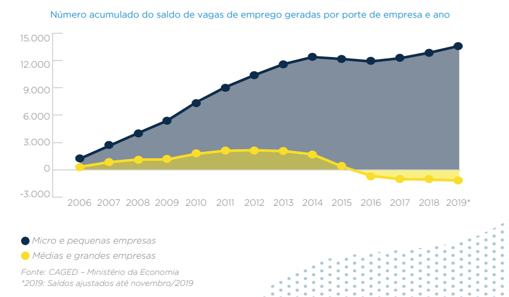
CAGED (2006 a 2019) por porte das empresas: MPE’s versus demais Empresas. Fonte: Min. Economia
Observe-se que, mesmo em príodo de crise de empregos, 2015 a 2019, as MPE’s - Micro e Pequenas Empresas são menos afetadas e tendem a sofrer quedas não tão acentuadas e mesmo recuperar-se mais rapidamente que as empresas dos demais portes (médias e grandes).
Outro aspceto relevante é a participação das MPEs no PIB Brasil (1985-2017), conforme estudo realizado pela FGV e SEBRAE.
Participação das MPEs no PIB-Br (1985 a 2019). Fonte: FGV e SEBRAE
Percebe-se pouca dispersão em torno da reta tracejada (provável reta de regressão), que representa uma correlação positiva entre a proporção(%) da participação das MPE’s no PIB-Br ao longo do período observados, de 1985 a 2017, de forma consistente ao longos desses 32 anos.
Agora vamos olhar para os Valores, em reais (R$), da participação das MPEs beneficiárias de contratos nas compras públicas (licitações) de entes federais, de 2016 a 2020 (BARZELLAY; DAS NEVES, 2022 , p. 107, gráfico 2).
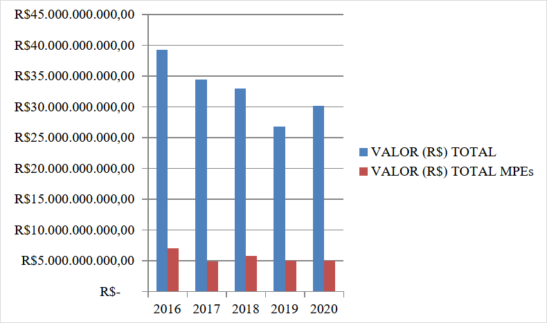
E verificar como a proporção (%) dessa participação evoluiu nesse mesmo período de tempo, (BARZELLAY; DAS NEVES, 2022 , p. 108, gráfico 4).
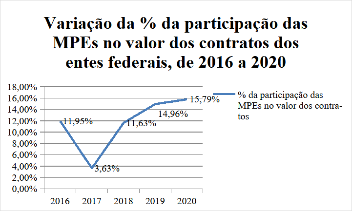
4.18.4 Explorar
Ver um resumo das possíveis relações entre cada par dessas 8 variáveis quantitativas.
Código
```{r}pairs.panels(mpe, lm=TRUE)```
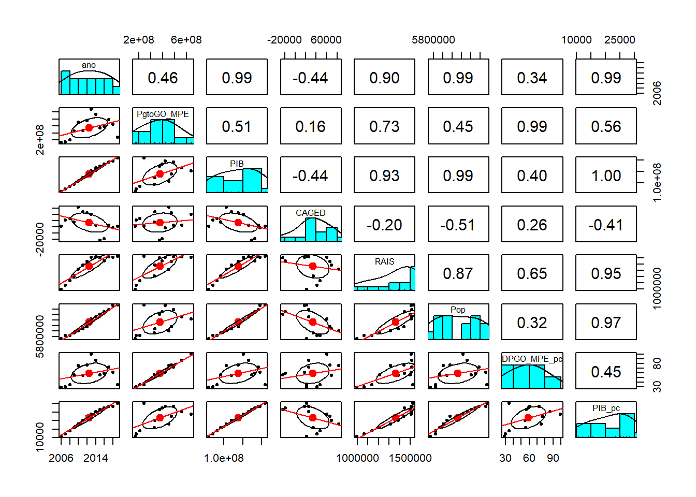
A matriz de gr[aficos acima fornece uma visão geral rápida das relações entre as variáveis e identificar quais são mais importantes.
Exibir o Nível de Significância dos coeficientes de correlação acima através de um correlograma com mapa de calor (de cores) ou hit-map para corroborar essas evidências iniciais.
Código
```{r}library(psych)library(Hmisc)library(corrplot)# Calculando correlações e p-valoresres <-rcorr(as.matrix(mpe))library(Hmisc)library(corrplot)# Calcular a matriz de correlação e os p-valoresres <-rcorr(as.matrix(mpe)) # retorna lista com r (correlações) e P (p-valores)# Gera o corrplot com personalizaçãocorrplot( res$r, # matriz de correlaçãomethod ="color", # método de visualização (pode ser "number", "circle", etc.)type ="upper", # mostra apenas a metade superiororder ="hclust", # ordena as variáveis por similaridadeaddCoef.col ="black", # adiciona os valores das correlaçõestl.col ="black", # cor dos nomes das variáveistl.srt =45, # rotação dos nomes das variáveistl.cex =0.8, # tamanho dos nomes das variáveiscol =colorRampPalette(c("red", "white", "blue"))(200), # gradiente de coresnumber.cex =0.7, # tamanho dos números e asteriscosmar =c(0,0,1,0) # margens do gráfico)# Adiciona um título ao gráfico# title("Mapa de Correlação - MPE's Goiás", line = 0.5, cex.main = 1.5)# Adiciona asteriscos manualmenten <-ncol(res$r)for(i in1:(n-1)) {for(j in (i+1):n) { pval <- res$P[i, j]if(!is.na(pval)) {if(pval <0.001) { ast <-"***" } elseif(pval <0.01) { ast <-"**" } elseif(pval <0.05) { ast <-"*" } else { ast <-"" }if(ast !="") {# Ajuste os valores de x e y para posicionar acima e à direita x <- j +0.25 y <- n - i +1+0.25text(x, y, labels = ast, col ="red", cex =1.2, font =2) } } }}# Adiciona a nota de rodapé explicando os asteriscosmtext("*** p < 0.001 ** p < 0.01 * p < 0.05",side =1, # parte inferior do gráficoline =3, # distância da margemcex =0.7, # tamanho da fonteadj =0# centralizado)```
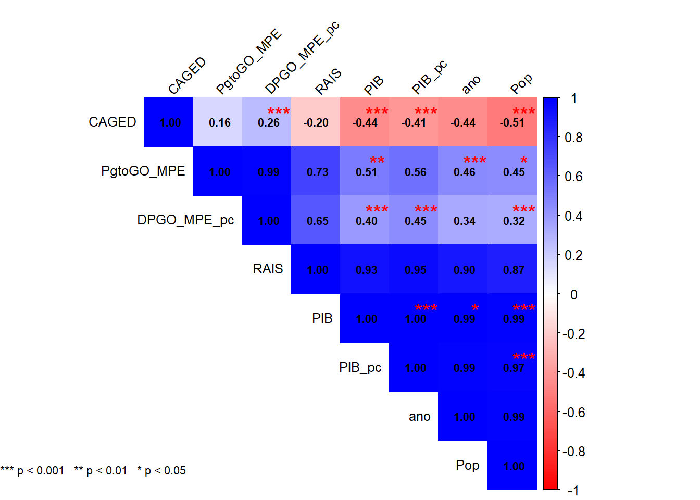
Há correlações que são esperadas, como PIB e PIB_pc, entre PIB_pc e Pop ou entre DPGO_MPE_pc e Pop, dada ao modo como foram calculados esses indicadores per capta.
4.18.5 Contexto MPE no Estado de Goiás
Proporção de órgãos públicos estaduais no valor total de compras públicas realizadas pelo Estado de Goiás ao contratar com MPEs, no período 2006 a 2019, com uma análise de Pareto.
Comparação do valor total, em reais (R$) gasto nas licitações do estado de Goiás, de 2009 a 2019, com a participação das MPEs em relação a esse total de compras públicas, (BARZELLAY; DAS NEVES, 2022 , p. 146, gráfico 17).
Agora a mesma informação acima expressa como proporção (%) do valor das compras públicas pagos às MPE’s em relação ao valor total das despesas do Estado de Goiás com licitações (2009 a 2019), no mesmo período de 11 anos (BARZELLAY; DAS NEVES, 2022 , p. 146, gráfico 18).
Agora é nítida a tendência de queda sistemática dessa proporção (%) desde 2010, quando chegou a 41,9%, em um ano em que claramente foi o de menor despesa pública com licitações; até 2019, quando terminou com a menor proporção registrada no período de 11 anos, com 6,4%.
Tendência essa em clara divergência com a Política Pública de fomento às MPPs preconizada no art. 179, CF/1988 e arts. 44 e 45, LC n. 123/2006 - Estatuto Nacional da Microempresa e da Empresa de Pequeno Porte).
Uma Análise de Pareto referente ao volume de recursos fiscalizados (VTF, R$) de cada um dos 28 órgãos licitantes, dos n = 267 processos cujos acórdãos foram analisados (possível viés de busca por palavras chave no site do TCE-GO), ilusta em que órgãos concentram-se as despesas públicas com MPE’s.
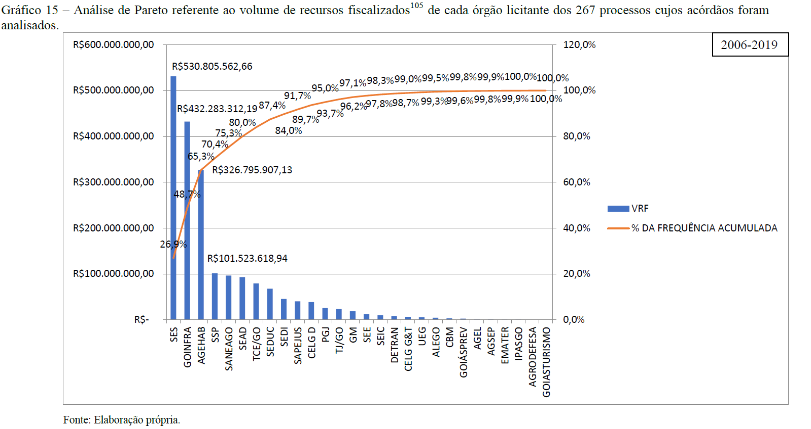
Análise de Pareto referente ao volume de recursos fiscalizados (VRF, R$) de cada órgão licitante dos 267 processos cujos acórdãos foram analisados.
Esse gráfico evidencia que 20% dos 28 órgãos, que corresponde a 0,20 x 28 = 5,6 = 6 primeiros órgãos, concentram 80% do VRF - Volume de Recursos Fiscalizados (R$) pelo TCE-GO quanto às despesas com licitação do Estado de Goiás (2006 a 2019, um período de 14 anos).
Os órgãos em que o Controle Externo do TCE-GO deveria priorizar o controle do poder das compras públicas tendo em vista o monitoramento do cumprimento da Política Pública de fomento às MPE’s são:
SES - Secretaria de Estado da Saúde
GOINFRA
AGEHAB
SSP
SANEAGO
SEAD - Secretaria de Estado da Administração
Para se ter uma ideia do alcance dessa política em relação a todas as MPE’s ativas sediadas no Estado de Goiás, do total das 629.359 (seiscentos e vinte e nove mil, trezentos e cinquenta e nove) empresas registradas como empresa de pequeno porte com endereço no Estado de Goiás, apenas 6.893 (seis mil, oitocentos e noventa e três), ou seja, 1,1% (um vírgula zero nove por cento) consta da lista das empresas beneficiadas com os empenhos realizados pelo Estado de Goiás entre 2006 e 2020.
O gráfico a seguir ilustra esse cenário.
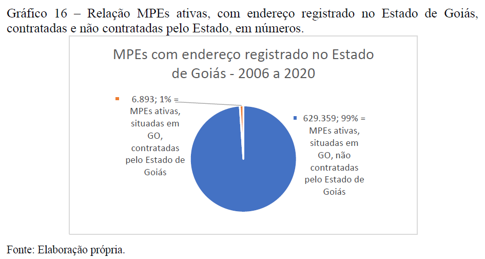
Relação MPEs ativas, com endereço registrado no Estado de Goiás, contratadas e não contratadas pelo Estado de Goiás (2006 a 2020), em números.
Apenas 1% do total de MPE’s ativas situadas no Estado de Goiás tiveram acesso à Política Pública de fomento prevista na LC n. 123/2006, o que denota um amplo espaço de alcance dessa política pública ainda sem cobertura.
4.18.6 Análise Exploratória Explicativa bivariada
4.18.6.1 Y = CAGED e X = PgtoGO_MPE
Baseia-se no estudo de uma possível relação linear entre uma variável resposta Y e uma variável explicativa X, ambas quantitativas.
Vamos considerar, inicialmente:
Y = CAGED
X = PgtoGO_MPE
Script a seguir gera um gráfico de dispersão com a reta de regressão.
Código
```{r}library(ggpubr)# dados do data frame chamado mpesummary(mpe$CAGED)# Gráfico de dispersão com reta de regressão linear, r e R²ggplot(mpe, aes(x = PgtoGO_MPE /1000000,y = CAGED /1000)) +geom_point(color ="blue", alpha =0.7) +# pontos de dispersãogeom_smooth(method ="lm", se =TRUE, color ="red") +# reta de regressão linear com intervalo de confiançastat_cor(aes(label =paste(..r.label.., ..p.label.., sep ="~`,`~")),label.x =Inf, label.y =-Inf, hjust =1.1, vjust =-0.5, size =5) +stat_regline_equation(aes(label =paste(..eq.label.., ..rr.label.., sep ="~~~")),label.x =Inf, label.y =Inf, hjust =1.1, vjust =2, size =5) +labs(title ="Gráfico de Dispersão c/Reta Regressão",subtitle ="Período: 2006 a 2019 (n = 14 obs.)",x ="PgtoGO_MPE (despesa pública GO c/MPE, milhões R$)",y ="CAGED (saldo em milhares de empregos)" ) +ylim(-30, 85) +geom_hline(yintercept =0, linetype ="dashed") +theme_minimal(base_size =14) # tema visual limpo e fonte maior```
Min. 1st Qu. Median Mean 3rd Qu. Max.
-24551 21183 29887 33585 57460 83975
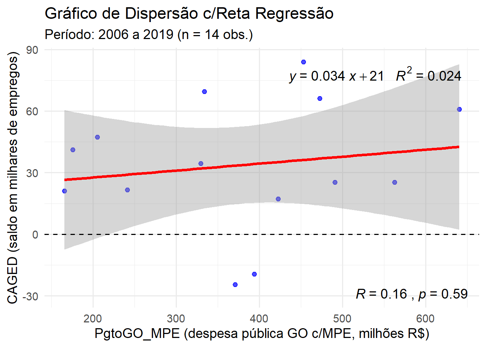
4.18.6.2 Z-score
Calcular o Z-score para os dados do data frame mpe.
Exceto para a coluna ano, para a qual não faz sentido determinar o Z-score.
Código
```{r}# Função para calcular o z-score de um vetor numéricoz_score <-function(x) {# Remove valores ausentes (NA) do cálculo da média e do desvio padrão media <-mean(x, na.rm =TRUE) desvio <-sd(x, na.rm =TRUE)# Calcula o z-score para cada elemento de x z <- (x - media) / desvioreturn(z)}# Interpretação: valores positivos estão acima da média, negativos abaixo.# Se usar essa função com um vetor contendo NA# Os NAs permanecem como NA no resultado.# deletar a variável mpe_z, caso ela existaif (exists("mpe_z")) {rm(mpe_z) # remove mpe_z, somente se ela existir}mpe # exibe o data frame mpe# Aplicar a função z_score em cada coluna do data frame mpe:# Exceto à primeira coluna ano, porque não faz sentido.mpe_z <-as.data.frame(apply(mpe[, -1], MARGIN=2, FUN=z_score))mpe_z <- mpe_z %>% dplyr::mutate(ano = mpe$ano, .before = PgtoGO_MPE)mpe_z # exibe o data frame de z-socores, acrescido da 1ª coluna ano.```
Mesmo grágfico de dispersão acima, mas agora para os escores-z das variáveis X e Y.
Código
```{r}# dados do data frame chamado mpesummary(mpe_z$CAGED)# Gráfico de dispersão com reta de regressão linear, r e R²ggplot(mpe_z, aes(x = PgtoGO_MPE,y = CAGED)) +geom_point(color ="blue", alpha =0.7) +# pontos de dispersãogeom_smooth(method ="lm", se =TRUE, color ="red") +# reta de regressão linear com intervalo de confiançastat_cor(aes(label =paste(..r.label.., ..p.label.., sep ="~`,`~")),label.x =Inf, label.y =-Inf, hjust =1.1, vjust =-0.5, size =5) +stat_regline_equation(aes(label =paste(..eq.label.., ..rr.label.., sep ="~~~")),label.x =Inf, label.y =Inf, hjust =1.1, vjust =2, size =5) +labs(title ="Gráfico de Dispersão c/Reta Regressão p/Z-scores",subtitle ="Período: 2006 a 2019 (n = 14 obs.)",x ="Z-PgtoGO_MPE (Z-score da despesa pública GO c/MPE)",y ="Z-CAGED (Z-score do saldo de empregos)" ) +xlim(-2, 2) +ylim(-2, 2) +theme_minimal(base_size =14) # tema visual limpo e fonte maior```
Min. 1st Qu. Median Mean 3rd Qu. Max.
-1.855 -0.396 -0.118 0.000 0.762 1.608
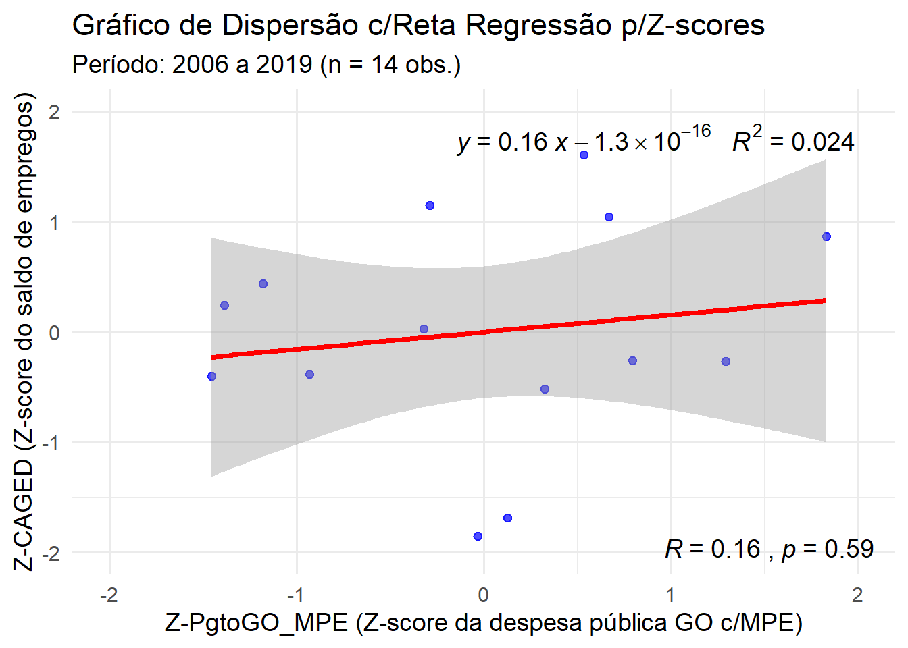
Observar que ao trasformar os valores originais em score-Z, os gráficos de dispersão e a reta de regressão não mudam de forma.
Apenas a reta de regressão fica centrada na origem, ponto (X = 0, Y = 0).
O resultado final é uma fraca correção (r = 0,16) entre Y = CAGED e X = PgtoGO_MPE.
Além disso essa correlação não é estatisticamente significativa para um nível de significância de 5% (Erro tipo I, alpha = 0,05 = 5%), poi seu valor-P = 0,59 = 59%.
4.18.6.3 Y = RAIS e X = PgtoGO_MPE
Vamos considerar, agora:
Y = RAIS
X = PgtoGO_MPE
Script a seguir gera um gráfico de dispersão com a reta de regressão.
Código
```{r}# dados do data frame chamado mpesummary(mpe$RAIS)# Gráfico de dispersão com reta de regressão linear, r e R²ggplot(mpe, aes(x = PgtoGO_MPE /1000000,y = RAIS /1000000)) +geom_point(color ="blue", alpha =0.7) +# pontos de dispersãogeom_smooth(method ="lm", se =TRUE, color ="red") +# reta de regressão linear com intervalo de confiançastat_cor(aes(label =paste(..r.label.., ..p.label.., sep ="~`,`~")),label.x =Inf, label.y =-Inf, hjust =1.1, vjust =-0.5, size =5) +stat_regline_equation(aes(label =paste(..eq.label.., ..rr.label.., sep ="~~~")),label.x =Inf, label.y =Inf, hjust =1.1, vjust =2, size =5) +labs(title ="Gráfico de Dispersão c/Reta Regressão",subtitle ="Período: 2006 a 2019 (n = 14 obs.)",x ="PgtoGO_MPE (despesa pública GO c/MPE, milhões R$)",y ="RAIS (núm. empregos, em milhões)" ) +ylim(0, 2) +theme_minimal(base_size =14) # tema visual limpo e fonte maior```
Min. 1st Qu. Median Mean 3rd Qu. Max.
992822 1235393 1442642 1361104 1508958 1524304
O mesmo gráfico para os já calculados escores-Z.
Código
```{r}# dados do data frame chamado mpesummary(mpe_z$RAIS)# Gráfico de dispersão com reta de regressão linear, r e R²ggplot(mpe_z, aes(x = PgtoGO_MPE,y = RAIS)) +geom_point(color ="blue", alpha =0.7) +# pontos de dispersãogeom_smooth(method ="lm", se =TRUE, color ="red") +# reta de regressão linear com intervalo de confiançastat_cor(aes(label =paste(..r.label.., ..p.label.., sep ="~`,`~")),label.x =Inf, label.y =-Inf, hjust =1.1, vjust =-0.5, size =5) +stat_regline_equation(aes(label =paste(..eq.label.., ..rr.label.., sep ="~~~")),label.x =Inf, label.y =Inf, hjust =1.1, vjust =2, size =5) +labs(title ="Gráfico de Dispersão c/Reta Regressão p/Z-scores",subtitle ="Período: 2006 a 2019 (n = 14 obs.)",x ="Z-PgtoGO_MPE (Z-score da despesa pública GO c/MPE)",y ="Z-CAGED (Z-score do saldo de empregos)" ) +xlim(-2, 2) +ylim(-2, 2) +theme_minimal(base_size =14) # tema visual limpo e fonte maior```
Min. 1st Qu. Median Mean 3rd Qu. Max.
-1.973 -0.674 0.437 0.000 0.792 0.874
O resultado final é uma forte correção (r = 0,73) entre Y = RAIS e X = PgtoGO_MPE.
Além disso essa correlação é estatisticamente significativa para um nível de significância de 5% (Erro tipo I, alpha = 0,05 = 5%), poi seu valor-P = 0,0028 = 0,3% é menor que 5,0% = alpha.
4.18.6.4 Y = PIB e X = PgtoGO_MPE
Vamos considerar, agora:
Y = PIB
X = PgtoGO_MPE
Script a seguir gera um gráfico de dispersão com a reta de regressão.
Código
```{r}# dados do data frame chamado mpesummary(mpe$PIB)# Gráfico de dispersão com reta de regressão linear, r e R²ggplot(mpe, aes(x = PgtoGO_MPE /1000000,y = PIB /1000000)) +geom_point(color ="blue", alpha =0.7) +# pontos de dispersãogeom_smooth(method ="lm", se =TRUE, color ="red") +# reta de regressão linear com intervalo de confiançastat_cor(aes(label =paste(..r.label.., ..p.label.., sep ="~`,`~")),label.x =Inf, label.y =-Inf, hjust =1.1, vjust =-0.5, size =5) +stat_regline_equation(aes(label =paste(..eq.label.., ..rr.label.., sep ="~~~")),label.x =Inf, label.y =Inf, hjust =1.1, vjust =2, size =5) +labs(title ="Gráfico de Dispersão c/Reta Regressão",subtitle ="Período: 2006 a 2019 (n = 14 obs.)",x ="PgtoGO_MPE (despesa pública GO c/MPE, milhões R$)",y ="PIB (em milhões R$)" ) +ylim(50, 200) +theme_minimal(base_size =14) # tema visual limpo e fonte maior```
Min. 1st Qu. Median Mean 3rd Qu. Max.
6.14e+07 9.63e+07 1.45e+08 1.39e+08 1.80e+08 2.09e+08
O mesmo gráfico para os já calculados escores-Z.
Código
```{r}# dados do data frame chamado mpesummary(mpe_z$PIB)# Gráfico de dispersão com reta de regressão linear, r e R²ggplot(mpe_z, aes(x = PgtoGO_MPE,y = PIB)) +geom_point(color ="blue", alpha =0.7) +# pontos de dispersãogeom_smooth(method ="lm", se =TRUE, color ="red") +# reta de regressão linear com intervalo de confiançastat_cor(aes(label =paste(..r.label.., ..p.label.., sep ="~`,`~")),label.x =Inf, label.y =-Inf, hjust =1.1, vjust =-0.5, size =5) +stat_regline_equation(aes(label =paste(..eq.label.., ..rr.label.., sep ="~~~")),label.x =Inf, label.y =Inf, hjust =1.1, vjust =2, size =5) +labs(title ="Gráfico de Dispersão c/Reta Regressão p/Z-scores",subtitle ="Período: 2006 a 2019 (n = 14 obs.)",x ="Z-PgtoGO_MPE (Z-score da despesa pública GO c/MPE)",y ="Z-PIB (Z-score do PIB-GO)" ) +xlim(-2, 2) +ylim(-2, 2) +theme_minimal(base_size =14) # tema visual limpo e fonte maior```
Min. 1st Qu. Median Mean 3rd Qu. Max.
-1.560 -0.855 0.126 0.000 0.825 1.409
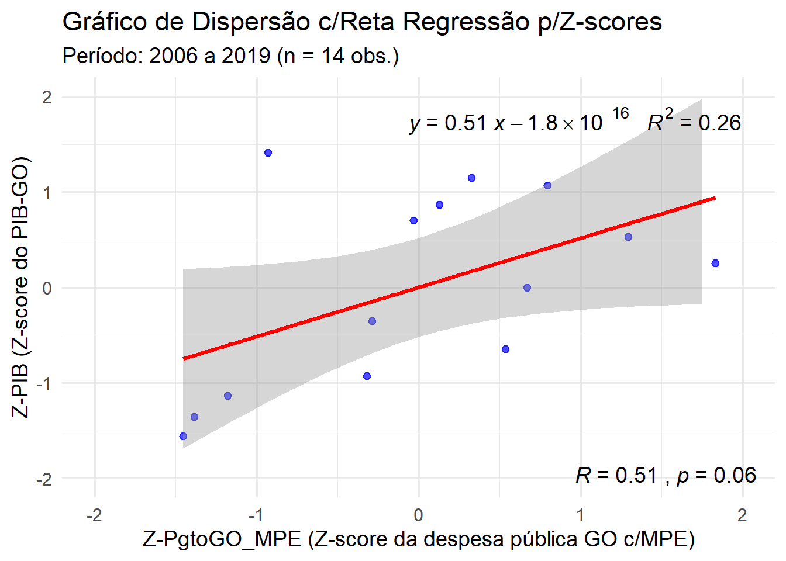
O resultado final é uma correção moderada a forte (r = 0,51) entre Y = PIB e X = PgtoGO_MPE.
Além disso essa correlação nãoé estatisticamente significativa para um nível de significância de 5% (Erro tipo I, alpha = 0,05 = 5%), poi seu valor-P = 0,06 = 6,0% é menor que 5,0% = alpha.
4.18.7 Conclusão
Pelos resultados ancançados e pelos testes de significância da hipótese nula (r = 0), pode-se afrimar que há forte correlação entre Y = RAIS e X = PgtoGO_MPE, pois r = 0,73 e seu correspondente valor-P = 0,0028 = 0,3% é menor que 5,0% = alpha.
Pela reta de regressão, pode-se interpretar que para cada 1 milhão de R$ gastos anualmente com a despesa pública do Estado de Goiás em contratos públicos com MPE’s o total de empregos eleva-se, em média, 0,00095 milhões = 0,95 mil = 950 empregos formais (RAIS).
O que equivaleria a um gasto médio marginal de R$1.052,63 com MPE’s pelo Estado de Goiás para cada vaga de emprego formal alcançada no período observado de 2006 até 2019.
Evidência que corrobora a intenção contitucional e legal de fomentar as MPE’s, a partir da consideração de que são elas as principais responsáveis pela geração de postos de trabalho no meio urbano (no meio rural esse papel fica com a agricultura familiar).
BARZELLAY, Larissa Sampaio; DAS NEVES, Cleuler Barbosa. Polı́tica pública de fomento às micro e pequenas empresas pelo poder das compras públicas no estado de Goiás: controle externo pelo TCE/GO (2006-2019). São Paulo: Editora Dialética, 2022.
POLDRACK, Russell. Pensamento Estatístico: AnalisandoDados em um Mundo de Incertezas. Tradução: Cibelle Ravaglia. Rio de Janeiro, RJ: Alta Books, 2025.
Esse exemplo hipotético se refere às eleições nos Estados Unidos. Lá, cada estado tem autonomia para criar suas regras de votação no âmbito permitido pelas leis federais. Ou seja, já que o voto não é obrigatório, dependendo da localização, os eleitores podem se registrar antes de votar ou podem se registrar no mesmo dia. Estadunidenses podem votar pelo correio, ou presencialmente, seja por cédulas de papel ou por urnas eletrônicas. [N. da T.]↩︎
Art. 44. Nas licitações será assegurada, como critério de desempate, preferência de contratação para as microempresas e empresas de pequeno porte. (Vide Lei nº 14.133, de 2021)
§ 1º Entende-se por empate aquelas situações em que as propostas apresentadas pelas microempresas e empresas de pequeno porte sejam iguais ou até 10% (dez por cento) superiores à proposta mais bem classificada.
§ 2º Na modalidade de pregão, o intervalo percentual estabelecido no § 1º deste artigo será de até 5% (cinco por cento) superior ao melhor preço.
Art. 45. Para efeito do disposto no art. 44 desta Lei Complementar, ocorrendo o empate, proceder-se-á da seguinte forma: (Vide Lei nº 14.133, de 2021
I - a microempresa ou empresa de pequeno porte mais bem classificada poderá apresentar proposta de preço inferior àquela considerada vencedora do certame, situação em que será adjudicado em seu favor o objeto licitado;
II - não ocorrendo a contratação da microempresa ou empresa de pequeno porte, na forma do inciso I do caput deste artigo, serão convocadas as remanescentes que porventura se enquadrem na hipótese dos §§ 1º e 2º do art. 44 desta Lei Complementar, na ordem classificatória, para o exercício do mesmo direito;
III - no caso de equivalência dos valores apresentados pelas microempresas e empresas de pequeno porte que se encontrem nos intervalos estabelecidos nos §§ 1º e 2º do art. 44 desta Lei Complementar, será realizado sorteio entre elas para que se identifique aquela que primeiro poderá apresentar melhor oferta.
§ 1º Na hipótese da não-contratação nos termos previstos no caput deste artigo, o objeto licitado será adjudicado em favor da proposta originalmente vencedora do certame.
§ 2º O disposto neste artigo somente se aplicará quando a melhor oferta inicial não tiver sido apresentada por microempresa ou empresa de pequeno porte.
§ 3º No caso de pregão, a microempresa ou empresa de pequeno porte mais bem classificada será convocada para apresentar nova proposta no prazo máximo de 5 (cinco) minutos após o encerramento dos lances, sob pena de preclusão.↩︎